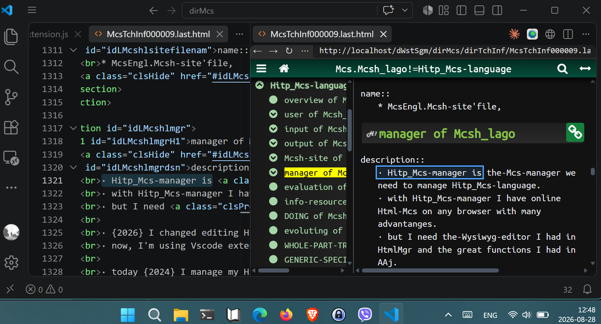

overview of Mcsh_lago
description::
× Mcsh-creation: {2021-03-09}
· Hitp_Mcs-language is a-concept-language that maps mind-concepts to Hitp_Mcs.
· the-first application of Hitp_Mcs-lago is my-Hitp_Mcs--world-view published in the-current site.
· IF this project\a\ will work, THEN it\a\ will-prove that we must-move from TEXTS to CONCEPTS in-order-to manage our knowledge. {2021-11-19}
· the biggest problem of current {2026} AI (LLM) is garbage-in garbage-out\b\: writing structured validated knowledge with Mcsh_lago will-help to solve it\b\. {2026-05-03}
name::
* McshEngl.Hitp_Mcs-language!⇒Mcsh_lago,
* McshEngl.Mcsh_lago!=Hitp_Mcs-language, {2026-06-28}
* McshEngl.Mcsh_lago!@McshTchInf000009,
* McshEngl.McshTchInf000009.last.html//dirTchInf//dirMcsh!⇒Mcsh_lago,
* McshEngl.dirTchInf/McshTchInf000009.last.html!⇒Mcsh_lago,
* McshEngl.Hitp-concept--language!⇒Mcsh_lago,
* McshEngl.Hitp_Mcs-format!⇒Mcsh_lago,
* McshEngl.HitpCpt-language!⇒Mcsh_lago,
* McshEngl.Mcsh--concept-language!⇒Mcsh_lago,
* McshEngl.Mcsh-format!⇒Mcsh_lago,
* McshEngl.Mcsh-lag!⇒Mcsh_lago,
* McshEngl.Mcsh-lago!⇒Mcsh_lago,
* McshEngl.Mcsh-lagCnpt!⇒Mcsh_lago,
* McshEngl.Mcsh-language!⇒Mcsh_lago,
* McshEngl.Mcshl!⇒Mcsh_lago,
* McshEngl.Mcshlago!⇒Mcsh_lago,
· Mcsh_lago!⇒Mcsh_lago,
* McshEngl.lagCnpt.007-Hitp_Mcs!⇒Mcsh_lago,
* McshEngl.lagCnpt.Hitp_Mcs!⇒Mcsh_lago,
* McshEngl.lagHcpt!⇒Mcsh_lago,
* McshEngl.lagHitp_Cpt!⇒Mcsh_lago,
* McshEngl.lagHitp_Mcs!⇒Mcsh_lago,
* McshEngl.lagHmcs!⇒Mcsh_lago,
* McshEngl.lagMcsh!⇒Mcsh_lago,
* McshEngl.lagMcsHitp!⇒Mcsh_lago,
* McshEngl.lagoMcsh!⇒Mcsh_lago, {2025-01-27}
user of Mcsh_lago
description::
× Mcsh-creation: {2026-10-04}
· app user.
name::
* McshEngl.Mcsh_lago'user,
user.human of Mcsh_lago
description::
× Mcsh-creation: {2026-10-04}
· a-human that uses the-language.
name::
* McshEngl.Mcsh_lago'human,
* McshEngl.Mcsh_lago'user.human,
specific-tree::
* author,
* reader|manager-user,
user.manager of Mcsh_lago (link)
input of Mcsh_lago
description::
× Mcsh-creation: {2026-10-04}
· mind-concepts\a\ are subjective models of humans environment, constructed by the-mind.
· anything we perceive is a-mind-concept\a\.
· mind-concepts have attributes which are also mind-concepts.
· systems of mind-concepts are mind-concepts.
· mind-concepts are-NOT the-units of information.
· information|knowledge is mind-concepts.
· human-languages have rules to give them\a\ names.
· human-languages map mind-concepts into logo-(text|speech).
· logos are whole-part-systems of sentences which map relations or doings of mind-concepts and describe attributes of mind-concepts.
· the-semantic-units of sentences are names of semo-concepts.
name::
* McshEngl.Mcsh_lago'input,
mind-concept of Mcsh_lago (link)
mind--world-view of Mcsh_lago (link)
output of Mcsh_lago
description::
× Mcsh-creation: {2026-10-04}
· the-output of Mcsh_lago is a-Hitp_doc that denotes an-Mcs.
· it is also a-webpage and a-webapp.
· it also contains MANY Mcs-concepts related to outer one.
· an-Mcs created with Mcsh_lago I call Hitp_Mcs, McsHitp, or Mcsh.
· a-Hitp_Mcs is a-model of a-mind-concept.
· it is-written in Html, Css, and JavaScript code.
· an-McshFile is a-Hitp_Mcs which is a-webpage, an-Mcshapp.
· the-Mcshapp is an-McshFile.
name::
* McshEngl.output-of-Mcsh_lago!⇒Mcshapp,
* McshEngl.Mcshapp!=output-of-Mcsh_lago,
* McshEngl.Mcsh-app!⇒Mcshapp,
* McshEngl.Mcsh-doc!⇒Mcshapp,
* McshEngl.Mcsh_lago'output!⇒Mcshapp,
* McshEngl.Mcsh-web-app!⇒Mcshapp,
* McshEngl.Mcshapps!~plural!⇒Mcshapp,
* McshEngl.McshDirNnnnnn.last.html!⇒Mcshapp,
* McshEngl.Mcshdoc!⇒Mcshapp,
* McshEngl.Mcshdocs!~plural!⇒Mcshapp,
* McshEngl.file-Mcsh!⇒Mcshapp,
* McshEngl.McshAsfile!⇒Mcshapp,
* McshEngl.McshFile!⇒Mcshapp, {2021-03-24} {2025-08-09}
* McshEngl.McsHitp-file!⇒Mcshapp,
* McshEngl.McshHeader!⇒Mcshapp,
* McshEngl.Mcsh.Header!⇒Mcshapp,
* McshEngl.Mcsh.File!⇒Mcshapp,
* McshEngl.filMcs!⇒Mcshapp,
* McshEngl.header-Mcsh!⇒Mcshapp,
* McshEngl.webpage-Mcsh!⇒Mcshapp,
code of Mcshapp
description::
× Mcsh-creation: {2026-09-11}
· it is-written in Html, Css, and JavaScript code.
name::
* McshEngl.code-of-Mcshapp,
* McshEngl.Mcshapp'code,
Html-code of Mcshapp
description::
× Mcsh-creation: {2026-09-11}
· an-Mcshapp is a-Hitpdoc, then adheres to Hitp-Html-code.
· an-Mcshapp has extra notation, to represent senso-concepts.
name::
* McshEngl.Html-code--of-Mcshapp!⇒Mcshhtml,
* McshEngl.Mcshhtml!=Html-code--of-Mcshapp,
* McshEngl.Mcsh-Html-code!⇒Mcshhtml,
* McshEngl.Mcshapp'Html-code!⇒Mcshhtml,
link-title of Mcshhtml
description::
× Mcsh-creation: {2026-10-08}
· format: name of name (link)
name::
* McshEngl.Mcshhtml'link-title,
* McshEngl.link-in-title--of-Mcshhtml,
* McshEngl.title-with-link--of-Mcshhtml,
* McshEngl.Mcshapp'link-title,
Css-code of Mcshapp
description::
× Mcsh-creation: {2026-09-11}
·
name::
* McshEngl.Mcshcss,
* McshEngl.Css-code-of-Mcshapp!⇒Mcshcss,
* McshEngl.Mcshapp'Css-code!⇒Mcshcss,
JavaScript-code of Mcshapp
description::
× Mcsh-creation: {2026-09-11}
* mMcsh2.js: the-main code that displays the-app,
* extra.js: other functions (webapps) inside the-app,
name::
* McshEngl.JavaScript-code-of-Mcshapp!⇒Mcshjsbr,
* McshEngl.Mcshjsbr!=JavaScript-code-of-Mcshapp,
* McshEngl.Mcshapp'JavaScript-code!⇒Mcshjsbr,
file-name of Mcshapp
description::
× Mcsh-creation: {2026-10-04}
· relative: McshTchInf000009.last.html,
· absolute: https://synagonism.net/dirMcsh/dirTechInf/McshTchInf000009.last.html,
· Hitpdocs are-named: HitpDirNnnnnn.last.html.
· IF we name them as filMcs000000.last.html, THEN we can-change its main-name without changing its file-name. Also this way we can-store 1-million file-concepts per directory or using and a-letter eg filMcsA000000.last.html, 26 millions. {2021-03-28}.
name::
* McshEngl.Mcshapp'file-name,
* McshEngl.McshFile'file-name,
Mcsh of Mcshapp
description::
× Mcsh-creation: {2026-10-04}
· Hitp_Mcs is an-Mcs written with my Mcsh_lago-web-language.
· the current concept (Mcsh_lago) is a-Hitp_Mcs.
name::
* McshEngl.Hitp--senso-concept!⇒Mcsh,
* McshEngl.Mcsh!=Hitp--senso-concept, {2021-03-22}
* McshEngl.cnptHitp!⇒Mcsh,
* McshEngl.concept-of-Mcsh_lago!⇒Mcsh,
* McshEngl.conceptHitp!⇒Mcsh,
* McshEngl.Hitp-Mcs!⇒Mcsh,
* McshEngl.Hitp_Mcs!⇒Mcsh,
* McshEngl.Hitp-concept!⇒Mcsh,
* McshEngl.Hitp-cpt!⇒Mcsh,
* McshEngl.Hitp-sensorial-concept!⇒Mcsh,
* McshEngl.Hitppage.sensorial-concept!⇒Mcsh,
* McshEngl.Hmcs!⇒Mcsh, {2021-03-10}
* McshEngl.Mcs.Hitp!⇒Mcsh,
* McshEngl.Mcs.web!⇒Mcsh,
* McshEngl.McsAsHitp!⇒Mcsh,
* McshEngl.Mcshapp'Mcs!⇒Mcsh,
* McshEngl.Mcsh-concept!⇒Mcsh,
* McshEngl.Mcsh-concepts!~plural!⇒Mcsh,
* McshEngl.Mcsh_lago'concept!⇒Mcsh,
* McshEngl.Mcsh_lago'Mcs!⇒Mcsh,
* McshEngl.mcsHitp!⇒Mcsh,
* McshEngl.mcsHtml.Hitp!⇒Mcsh,
* McshEngl.modelConceptSensoHitp!⇒Mcsh,
* McshEngl.modelConceptStructuredHitp!⇒Mcsh,
* McshEngl.senso-concept.Hitp!⇒Mcsh,
* McshEngl.sensorial-concept.Hitp!⇒Mcsh,
* McshEngl.web--sensorial-concept!⇒Mcsh, {2018-02-18}
* McshEngl.web-Mcs!⇒Mcsh, {2018-02-18}
* McshEngl.Mcshapp'Mcsh!⇒Mcsh,
name-language of Mcsh
description::
× Mcsh-creation: {2025-06-05}
· the-languages of names that are-indexed:
- ALbanian-Shqipe (Sqip),
- ARabic (Arab),
- ChiNese (Zhon),
- english (Engl),
- Esperanto (Espo),
- GeRman (Deut),
- GreeK (Elln),
- GreekAncient (Ella),
- French (Frac),
- Hindi (Hind),
- Italian (Itln),
- RoManian (Romn),
- SlavoBosnian-Bosanski (Sbos),
- SlavoCroatian-Hrivatski (Shrv),
- SlavoMontenegrin-Tsirnogorski (Scnr),
- SlavoSerbian-Sripski (Ssrp),
- SlavoBuLgarian (SBul),
- SlavoMacedonian (Smkd),
- SlavoRuSsian (Srus),
- SlavoSLovenian (Sslv),
- SiNagu (Sngu),
- SPanish (Span),
- Turkish (Turk),
- Vietnamese (Vnma),
- Arab (ARabic),
- Engl (english),
- Espo (Esperanto),
- Deut (GeRman),
- Ella (GreekAncient),
- Elln (GreeK),
- Frac (French),
- Hind (Hindi),
- Itln (Italian),
- Romn (RoManian),
- Sbos (SlavoBosnian-Bosanski),
- Shrv (SlavoCroatian-Hrivatski),
- Scnr (SlavoMontenegrin-Tsirnogorski),
- Ssrp (SlavoSerbian-Sripski),
- Sbul (SlavoBuLgarian),
- Smkd (SlavoMacedonian),
- Srus (SlavoRuSsian),
- Sslv (SlavoSLovenian),
- Sngu (SiNagu),
- Span (SPanish),
- Sqip (ALbanian-Shqipe),
- Turk (Turkish),
- Vnma (Vietnamese),
- Zhon (ChiNese),
name::
* McshEngl.Mcsh'language-of-names,
* McshEngl.Mcsh'name-language,
* McshEngl.Mcsh_lago'language-of-names,
* McshEngl.name-language--of-Mcsh_lago,
name of Mcsh
description::
× Mcsh-creation: {2026-06-29}
× generic: Mcs-name
name::
* McshEngl.name-of-Mcsh!⇒Mcshname,
* McshEngl.Mcshname!=name-of-Mcsh,
* McshEngl.Mcsh'name!⇒Mcshname,
* McshEngl.Mcsh-name!⇒Mcshname,
* McshEngl.Mcsh_name!⇒Mcshname,
* McshEngl.nameMcsh!⇒Mcshname,
GENERIC-SPECIFIC-TREE of Mcshname
description::
× Mcsh-creation: {2026-10-04}
name::
* McshEngl.Mcshname'generic-specific-tree,
* McshEngl.Mcshname'specific-generic-tree,
generic-tree::
* McshEngl.Mcshname_Gntr,
===
* ... entity_Gntr,
specific-tree::
* McshEngl.Mcshname.specific,
* McshEngl.Mcshname_Sptr,
===
* Adje-name,
* Adve-name,
* case-name,
* Conj-name,
* formal-name,
* id-name,
* informal-name,
* lago-name,
* Mcsh_lago-name,
* noun-name,
* verb-name,
* title-name,
===
* main--Mcsh-name,
** formal-mind-main--Mcsh-name,
*** global-formal-mind-main--Mcsh-name,
*** local-formal-mind-main--Mcsh-name,
** formalNo-mind-main--Mcsh-name,
* mainNo--Mcsh-name,
===
* mind--Mcs-name,
* mindNo--Mcs-name,
Mcshname.id
description::
× Mcsh-creation: {2026-06-29}
· the-global formal unique main-name,
· this is the-Html-link of the-concept.
* absolute: http://localhost/dirMcsh/dirTchInf/McshTchInf000009.last.html
* relative: dirTchInf/McshTchInf000009.last.html
name::
* McshEngl.Mcshname.id!⇒McshnameId,
* McshEngl.McshnameId!=Mcshname.id,
* McshEngl.Mcsh'id!⇒McshnameId,
* McshEngl.Mcsh_id!⇒McshnameId,
* McshEngl.id-Mcsh-name!⇒McshnameId,
* McshEngl.id-of-Mcsh!⇒McshnameId,
* McshEngl.link-name-of-Mcsh!⇒McshnameId,
* McshEngl.Mcsh_nameMainFrmlGlbl!⇒McshnameId,
GENERIC-SPECIFIC-TREE of McshnameId
description::
× Mcsh-creation: {2026-06-29}
name::
* McshEngl.McshnameId'generic-specific-tree,
* McshEngl.McshnameId'specific-generic-tree,
generic-tree::
* McshEngl.McshnameId_Gntr,
===
* ... entity_Gntr,
specific-tree::
* McshEngl.McshnameId.specific,
* McshEngl.McshnameId_Sptr,
===
* McshnameId.global!@McshTchInf000009#idMcsHitpnameIdGlbl,
* McshnameId.local!@McshTchInf000009#idMcsHitpnameIdLocl,
naming-rule of McshnameId
description::
× Mcsh-creation: {2026-10-07}
1) IF the-concept is a-lago-concept, THEN the id is: idLName, where 'Name' is the-4-letter code of the-language.
name::
* McshEngl.McshnameId'naming-rule,
* McsEngl.McshnameId'naming-rule,
McshnameId.global
description::
× Mcsh-creation: {2026-08-10}
* global-id-name: https://synagonism.net/dirMcsh/dirLag/McshLag000003.last.html#idInfHmnBrn004
name::
* McshEngl.global-id-Mcsh-name!⇒McshnameIdGlbl,
* McshEngl.McshnameIdGlbl!=global-id-Mcsh-name,
* McshEngl.McshnameId.global!⇒McshnameIdGlbl,
McshnameId.local
description::
× Mcsh-creation: {2026-10-04}
* local-id-name: http://localhost/dirMcsh/dirTchInf/McshTchInf000009.last.html
name::
* McshEngl.Mcsh-local-id!⇒McshnameIdLocl,
* McshEngl.McshnameIdLocl!=Mcsh-local-id,
* McshEngl.local-id-Mcsh-name!⇒McshnameIdLocl,
* McshEngl.McshnameId.local!⇒McshnameIdLocl,
* McshEngl.global-formal-main--name-of-Mcsh!⇒McshnameIdLocl,
McshnameId.absolute
description::
× Mcsh-creation: {2026-08-10}
· absolute-id-name is a-global or local id-name.
* https://synagonism.net/dirMcsh/dirLag/McshLag000003.last.html#idInfHmnBrn004
or
* http://localhost/dirMcsh/dirTchInf/McshTchInf000009.last.html
name::
* McshEngl.McshnameId.absolute!⇒McshnameIdAbso,
* McshEngl.McshnameIdAbso!=McshnameId.absolute,
* McshEngl.absolute-id-name--of-Mcsh!⇒McshnameIdAbso,
* McshEngl.McshnameIdLocl.absolute!⇒McshnameIdAbso,
McshnameId.relative
description::
× Mcsh-creation: {2026-10-04}
* relative-id-name: dirTchInf/McshTchInf000009.last.html
name::
* McshEngl.Mcsh-relative-id!⇒McshnameIdRela,
* McshEngl.McshnameIdRela!=Mcsh-relative-id,
* McshEngl.McshnameId.relative!⇒McshnameIdRela,
* McshEngl.relative-id-name--of-Mcsh!⇒McshnameIdRela,
Mcshname.main
description::
× Mcsh-creation: {2026-06-30}
· the-formal and informal main-name.
name::
* McshEngl.Mcshname.main!⇒McshnameMain,
* McshEngl.McshnameMain!=Mcshname.main,
* McshEngl.main-Mcsh-name!⇒McshnameMain,
GENERIC-SPECIFIC-TREE of McshnameMain
description::
× Mcsh-creation: {2026-10-04}
name::
* McshEngl.McshnameMain'generic-specific-tree,
* McshEngl.McshnameMain'specific-generic-tree,
generic-tree::
* McshEngl.McshnameMain_Gntr,
===
* ... entity_Gntr,
specific-tree::
* McshEngl.McshnameMain.specific,
* McshEngl.McshnameMain_Sptr,
===
McshnameMain.mind
description::
× Mcsh-creation: {2026-10-10}
a) after !⇒ AND b) after != in non-english-names.
name::
* McshEngl.main-mind-Mcshname,
* McshEngl.mind-main-Mcshname,
* McshEngl.McshnameMain.mind,
McshnameMain.formal
description::
× Mcsh-creation: {2026-06-29}
· machine readable main-name.
· formal-name is the-text after '!⇒' in a-Mcsh_lago-name.
· one word.
· example: Mcsh_lago, lagoMcsh, McshnameFrml,
· every language could have one formal and one informal name, but the-English formal-name is the-formal-name of the-concept. {2026-08-15}
· ALSO: formal-names are and the-one that contain './:;
- attribute: name'attr,
- specific: name.specific,
- generic: name:generic,
- part: name/part,
- whole: name//whole,
- child: name;child,
- parent: name;;parent,
- many-words: word1_word2,
[humnSngu.{2026-10-08}]
name::
* McshEngl.Mcsh-formal-name!⇒McshnameFrml,
* McshEngl.McshnameFrml!=Mcsh-formal-name,
* McshEngl.nameFormal-of-Mcsh!⇒McshnameFrml,
* McshEngl.formal-main-Mcsh-name!⇒McshnameFrml,
* McshEngl.formal-Mcsh-main-name!⇒McshnameFrml,
* McshEngl.formal-name--of-Mcsh!⇒McshnameFrml,
* McshEngl.McshnameMain.formal!⇒McshnameFrml,
* McshEngl.Mcshname.mainFormal!⇒McshnameFrml,
McshnameMain.informal
description::
× Mcsh-creation: {2026-06-29}
· human readable main-name.
· example: Mcsh-informal-name,
· informal-name is the-text after '!=' of a-formal-name.
name::
* McshEngl.Mcsh-informal-name!⇒McshnameFrmlNo,
* McshEngl.McshnameFrmlNo!=Mcsh-informal-name,
* McshEngl.nameInformal-of-Mcsh!⇒McshnameFrmlNo,
* McshEngl.McshnameMain.formalNo!⇒McshnameFrmlNo,
* McshEngl.Mcshname.mainFormalNo!⇒McshnameFrmlNo,
* McshEngl.informal-main-Mcsh-name!⇒McshnameFrmlNo,
* McshEngl.informal-name--of-Mcsh!⇒McshnameFrmlNo,
* McshEngl.informal-Mcsh-main-name!⇒McshnameFrmlNo,
McshnameMain.title
description::
× Mcsh-creation: {2026-06-30}
· mainly the-informal-main-name, but can contain and the-formal-main-name.
name::
* McshEngl.Mcsh-title!⇒McshnameTitle,
* McshEngl.McshnameTitle!=Mcsh-title,
* McshEngl.McshnameMain.title!⇒McshnameTitle,
* McshEngl.Mcshname.title-main-mind!⇒McshnameTitle,
* McshEngl.title-main-Msch-name!⇒McshnameTitle,
* McshEngl.title-Msch-main-name!⇒McshnameTitle,
Mcshname.mainNo
description::
× Mcsh-creation: {2026-06-30}
· any non main-name.
name::
* McshEngl.Mcshname.mainNo!⇒McshnameMainNo,
* McshEngl.McshnameMainNo!=Mcshname.mainNo,
* McshEngl.Mcsh_nameMainNo!⇒McshnameMainNo,
* McshEngl.mainNo-Mcsh-name!⇒McshnameMainNo,
* McshEngl.non-main-Mcsh-name!⇒McshnameMainNo,
Mcshname.Mcsh_lago
description::
× Mcsh-creation: {2026-08-13}
· the-names of form * Mcsh_lago.name,.
· contain per language its formal, informal and synonyms (aNoun, aCase, aAdje, aAdve, aVerb, aConj).
· do not contain its id and title.
name::
* McshEngl.Mcsh_lago-name-of-Mcsh!⇒McshnameMcsh_lago,
* McshEngl.McshnameMcsh_lago!=Mcsh_lago-name-of-Mcsh,
* McshEngl.Mcshname.Mcsh_lago!⇒McshnameMcsh_lago,
McshnameMcsh_lago.noun
description::
× Mcsh-creation: {2026-08-14}
× format: * McshEngl.name..., without !~case|Adje|Adve|verb|Conj
name::
* McshEngl.McshnameNoun,
* McshEngl.noun-of-Mcsh!⇒McshnameNoun,
* McshEngl.McshnameNoun!-noun-of-Mcsh,
* McshEngl.McshnameMcsh_lago.noun!⇒McshnameNoun,
McshnameMcsh_lago.case
description::
× Mcsh-creation: {2026-08-14}
× format: * McshEngl.name!~caseEngl...,
name::
* McshEngl.case-of-Mcsh!⇒McshnameCase,
* McshEngl.McshnameCase!=case-of-Mcsh,
* McshEngl.McshnameMcsh_lago.case!⇒McshnameCase,
McshnameMcsh_lago.Adje
description::
× Mcsh-creation: {2026-08-14}
× format: * McshEngl.name!~AdjeEngl...,
name::
* McshEngl.adjective-of-Mcsh!⇒McshnameAdje,
* McshEngl.McshnameAdje!=adjective-of-Mcsh,
* McshEngl.McshnameMcsh_lago.Adje!⇒McshnameAdje,
McshnameMcsh_lago.Adve
description::
× Mcsh-creation: {2026-08-14}
× format: * McshEngl.name!~AdveEngl...,
name::
* McshEngl.adverb-of-Mcsh!⇒McshnameAdve,
* McshEngl.McshnameAdve!=adverb-of-Mcsh,
* McshEngl.McshnameMcsh_lago.Adve!⇒McshnameAdve,
McshnameMcsh_lago.verb
description::
× Mcsh-creation: {2026-08-14}
× format: * McshEngl.name!~verbEngl...,
name::
* McshEngl.verb-of-Mcsh!⇒McshnameVerb,
* McshEngl.McshnameVerb!=verb-of-Mcsh,
* McshEngl.McshnameMcsh_lago.verb!⇒McshnameVerb,
McshnameMcsh_lago.Conj
description::
× Mcsh-creation: {2026-08-14}
× format: * McshEngl.at!~ConjEngl...,
name::
* McshEngl.conjunction-of-Mcsh!⇒McshnameConj,
* McshEngl.McshnameConj!=conjunction-of-Mcsh,
* McshEngl.McshnameMcsh_lago.Conj!⇒McshnameConj,
data of Mcsh
description::
× Mcsh-creation: {2026-10-04}
· any type of data used.
name::
* McshEngl.Mcsh'data,
GENERIC-SPECIFIC-TREE of Mcsh'data
description::
× Mcsh-creation: {2026-10-04}
name::
* McshEngl.Mcsh'data'generic-specific-tree,
* McshEngl.Mcsh'data'specific-generic-tree,
generic-tree::
* McshEngl.Mcsh'data_Gntr,
===
* ... entity_Gntr,
specific-tree::
* McshEngl.Mcsh'data.specific,
* McshEngl.Mcsh'data_Sptr,
===
* section-data,
* para-data,
* script-data,
=== para_data:
* list-data,
* name-value-data,
* table-data,
* text-data,
* time-data,
* tree-data,
data.section of Mcsh
description::
× Mcsh-creation: {2026-08-09}
· Mcsh_sect are section-Html-elements that mainly contain the-attributes of a-McshFile-concept.
· also they contain the-Mcsh_para data.
· IF they contain name::-para, THEN they are sect-concepts.
name::
* McshEngl.Mcsh_data.section!⇒Mcsh_sect,
* McshEngl.Mcsh_sect!=Mcsh_data.section,
* McshEngl.Mcsh'section-element!⇒Mcsh_sect,
* McshEngl.section-element--of-Mcsh!⇒Mcsh_sect,
* McshEngl.section-data--of-Mcsh!⇒Mcsh_sect,
* McshEngl.Mcsh'data.section!⇒Mcsh_sect,
overview of Mcsh_sect
description::
× Mcsh-creation: {2026-08-13}
· overview of Mcsh_sect is its part WITHOUT its section parts.
· only its direct h, p, div elements.
name::
* McshEngl.Mcsh_sect'overview,
* McshEngl.overview-of-Mcsh_sect,
data.para of Mcsh
description::
× Mcsh-creation: {2026-06-29}
· text, name-value, list, table, and tree are-stored in p and div Html-elements.
· list, table, tree data all are-wrapped with div-elements.
name::
* McshEngl.Mcsh'para-data!⇒Mcsh_para,
* McshEngl.Mcsh_para!=Mcsh'para-data,
* McshEngl.Mcsh-para!⇒Mcsh_para,
* McshEngl.Mcsh_data.para!⇒Mcsh_para,
* McshEngl.para-data--of-Mcsh!⇒Mcsh_para,
* McshEngl.Mcsh'data.para!⇒Mcsh_para,
Mcsh_para.p
description::
× Mcsh-creation: {2026-08-12}
· p-elements can contain misc info.
· IF they contain Mcsh_lago-names, THEN they are para-concepts.
name::
* McshEngl.p-data--of-Mcsh!⇒Mcsh_paraP,
* McshEngl.Mcsh_paraP!=p-data--of-Mcsh,
* McshEngl.p-element--of-Mcsh!⇒Mcsh_paraP,
* McshEngl.Mcsh_para.p!⇒Mcsh_paraP,
Mcsh_para.div
description::
× Mcsh-creation: {2026-08-12}
· div-elements are wrapers of lists, table, trees.
· IF they contain McsLag-names, THEN they are para-concepts.
name::
* McshEngl.Mcsh_paraDiv,
* McshEngl.div-element--of-Mcsh!⇒Mcsh_paraDiv,
* McshEngl.div-data--of-Mcsh!⇒Mcsh_paraDiv,
* McshEngl.Mcsh_para.div!⇒Mcsh_paraDiv,
data.script of Mcsh
description::
× Mcsh-creation: {2026-08-09}
· Mcsh_script are script-Html-elements that contain JavaScript code.
name::
* McshEngl.Mcsh_data.script!⇒Mcsh_script,
* McshEngl.Mcsh_script!=Mcsh_data.script,
* McshEngl.Mcsh'data.script!⇒Mcsh_script,
data.text of Mcsh
description::
× Mcsh-creation: {2026-10-04}
· all sentences begin with char.183'·'.
· if text is a-quotation, it is-enclosed with char.34'"' and contains its source.
name::
* McshEngl.Mcsh_text,
* McshEngl.Mcsh-text!⇒Mcsh_text,
* McshEngl.Mcsh'data.text!⇒Mcsh_text,
* McshEngl.Mcsh'text-data!⇒Mcsh_text,
data.list of Mcsh
description::
× Mcsh-creation: {2026-10-04}
· the-items of a-list begin with char.42'*'.
name::
* McshEngl.Mcsh_list,
* McshEngl.Mcsh'array-data!⇒Mcsh_list,
* McshEngl.Mcsh'data.list!⇒Mcsh_list,
* McshEngl.Mcsh'list-data!⇒Mcsh_list,
data.name-value of Mcsh
description::
× Mcsh-creation: {2026-10-04}
· name-value-data begin with char.215'×'.
× name: value
× aType: [string, object]
× bRequired: true
× nSince: 2.0
× sParent: root
[HumnSngu.{2020-12-28}]
name::
* McshEngl.name-value-data--of-Mcsh!⇒Mcsh_Nvd,
* McshEngl.Mcsh_Nvd!=name-value-data--of-Mcsh,
* McshEngl.Mcsh'data.name-value!⇒Mcsh_Nvd,
* McshEngl.Mcsh'name-value-data!⇒Mcsh_Nvd,
data.table of Mcsh
description::
× Mcsh-creation: {2026-10-04}
· example:
<div id="idTable">
<p>table-title::
</p>
<table>
<tr>
<td>row11</td>
<td>row12</td>
</tr>
<tr>
<td>row21</td>
<td>row22</td>
</tr>
</table>
<a class="clsHide" href="#idTable"></a></div>
name::
* McshEngl.Mcsh_table,
* McshEngl.Mcsh'data.table!⇒Mcsh_table,
* McshEngl.Mcsh'table-data!⇒Mcsh_table,
type of Mcsh
description::
× Mcsh-creation: {2026-08-14}
* cnptFile,
* cnptSect,
* cnptPara,
name::
* McshEngl.type-of-Mcsh!⇒Mcsh_type,
* McshEngl.Mcsh_type!=type-of-Mcsh,
* McshEngl.Mcsh'type!⇒Mcsh_type,
attribute of Mcsh
description::
× Mcsh-creation: {2026-10-14}
· attributes of the-Mcsh-concept.
name::
* McshEngl.Mcsh'attribute!⇒Mcshattr,
* McshEngl.Mcshattr!=Mcsh'attribute,
Mcshattr.generic
description::
× Mcsh-creation: {2026-10-14}
· location:
* inside generic-specific-tree,
* inside description, if no sect-parts and one line,
* inside generic-chain-para, if no sect-parts and more lines,
name::
* McshEngl.Mcshattr.generic,
evoluting of Mcsh
description::
× Mcsh-creation: {2026-10-04}
· see Mcsh_lago'evoluting.
name::
* McshEngl.evoluting-of-Mcsh,
* McshEngl.Mcsh'evoluting,
GENERIC-SPECIFIC-TREE of Mcsh
description::
× Mcsh-creation: {2026-10-04}
name::
* McshEngl.Mcsh'generic-specific-tree,
* McshEngl.Mcsh'specific-generic-tree,
generic-tree::
* McshEngl.Mcsh_Gntr,
===
* Mcs_Gntr,
* Hitpdoc_Gntr,
* modelCmpr_Gntr,
* ... entity_Gntr,
specific-tree::
* McshEngl.Mcsh.specific,
* McshEngl.Mcsh_Sptr,
===
* File-Hitp_Mcs,
* FileNo-Hitp_Mcs,
Mcsh.FILE (link)
title of Mcshapp
description::
× Mcsh-creation: {2026-10-04}
· McshFile-title is a-header-Html-element which includes a-h1-element with the-text of the-title.
name::
* McshEngl.McshFile'att001-title,
* McshEngl.McshFile'title,
* McshEngl.title-of-McshFile,
* McshEngl.Mcshapp'title,
Mcsh.FILE.NO
description::
× Mcsh-creation: {2026-04-29}
· non File Hitp_Mcs.
name::
* McshEngl.McshappNo,
* McshEngl.fileNo-Mcsh!⇒McshappNo,
* McshEngl.Mcsh.FileNo!⇒McshappNo,
* McshEngl.McshAsfileNo!⇒McshappNo,
* McshFileNo, {2019-03-07},
* mcshFileNo, {2025-08-09}
* McshEngl.McshFileNo!⇒McshappNo, {2026-08-09}
GENERIC-SPECIFIC-TREE of McshappNo
description::
× Mcsh-creation: {2026-04-29}
name::
* McshEngl.McshappNo'generic-specific-tree,
* McshEngl.McshappNo'specific-generic-tree,
generic-tree::
* McshEngl.McshappNo_Gntr,
===
* ... entity_Gntr,
specific-tree::
* McshEngl.McshappNo.specific,
* McshEngl.McshappNo_Sptr,
===
* section-Hitp_Mcs,
** H1-Hitp_Mcs,
** H2-Hitp_Mcs,
** H3-Hitp_Mcs,
** H4-Hitp_Mcs,
** H5-Hitp_Mcs,
** H6-Hitp_Mcs,
* P-Hitp_Mcs!@McshTchInf000009#idMcshPara,
Mcsh.SECTION
description::
× Mcsh-creation: {2026-10-04}
· a-section-Mcsh is a-concept-(Mcsh), part of a-File-Mcsh, that uses the-section-Html-element and one of its H1...H6-heading-elements.
· the-current-Mcs is an-McsηSectH3.
· the-text of its heading-element contains its title.
· the-whole-concept is-stored inside the-heading-element.
· the-first inner-elements are the-p-Html-elements description and name.
· its attributes are its part section-data.
name::
* McshEngl.section-Mcsh!⇒McshSect,
* McshEngl.McshSect!=section-Mcsh, {2026-08-09}
* McshEngl.McshSection!⇒McshSect,
* McshEngl.Mcsh.section!⇒McshSect,
GENERIC-SPECIFIC-TREE of McshSect
description::
× Mcsh-creation: {2026-10-04}
name::
* McshEngl.McshSect'generic-specific-tree,
* McshEngl.McshSect'specific-generic-tree,
generic-tree::
* McshEngl.McshSect_Gntr,
===
* Mcsh_Gntr,
* ... entity_Gntr,
specific-tree::
* McshEngl.McshSect.specific,
* McshEngl.McshSect_Sptr,
===
{2026-10-06}
Level | Sect-concepts | of all sections at that level
h1 | 38,156 | 40,499
h2 | 7,270 | 11,640
h3 | 6,142 | 10,468
h4 | 4,090 | 6,283
h5 | 3,555 | 4,549
h6 | 744 | 1,021
Total | 59,957 | 74,640
Mcsh.Para
description::
× Mcsh-creation: {2026-10-04}
· Mcsh_para-data, if contain and Mcs-names (* Mcsh_lago.name,) form para-concepts (McshPara).
· there-are 2 types of McshPara:
* a-text McshPara and
* a-list McshPara,
[HumnSngu.2017-12-17]
name::
* McshEngl.para-Mcsh!⇒McshPara,
* McshEngl.McshPara!=para-Mcsh, {2026-08-09}
* McshEngl.Mcsh.para!⇒McshPara,
* McshEngl.Mcsh.Para!⇒McshPara,
* McshEngl.McshFileNo.para!⇒McshPara,
* McshEngl.para-concept!⇒McshPara,
GENERIC-SPECIFIC-TREE of McshPara
description::
× Mcsh-creation: {2026-10-04}
name::
* McshEngl.McshPara'generic-specific-tree,
* McshEngl.McshPara'specific-generic-tree,
generic-tree::
* McshEngl.McshPara_Gntr,
===
* McshappNo_Gntr,
* ... entity_Gntr,
specific-tree::
* McshEngl.McshPara.specific,
* McshEngl.McshPara_Sptr,
===
* McshPara.TEXT!@McshTchInf000009#idMcshParaTxt,
* McshPara.LIST!@McshTchInf000009#idMcshParaLst,
title of McshPara
description::
× Mcsh-creation: {2026-10-04}
· the-title of a-McshPara ends with '::'
name::
* McshEngl.McshPara'att001-title,
* McshEngl.McshPara'title,
* McshEngl.title-of-McshPara,
name of McshPara
description::
× Mcsh-creation: {2026-10-04}
· after the-title, I put one or more names as:
* McsLag4.name,
· since {2020-10-18} these names are-indexed with the-Mcsh'manager.
name::
* McshEngl.McshPara'att002-name,
* McshEngl.McshPara'name,
* McshEngl.name-of-McshPara,
McshPara.TEXT
description::
× Mcsh-creation: {2026-10-04}
· a-text--Hitp-structured-concept is comprised of:
* a-title that ends with '::' and
* a-list of sentences that begin with '·' and end with '.',
· examples are the-description structured-concepts.
[HumnSngu.2017-12-17]
name::
* McshEngl.text-McshPara!⇒McshPText,
* McshEngl.McshPText!=text-McshPara,
* McshEngl.McshPara.text!⇒McshPText,
McshPara.LIST
description::
× Mcsh-creation: {2026-10-04}
· a-list-McshPara is comprised of:
* a-title that ends with '::' and
* a-list of info that begin with '*',
· examples are the-name structured-concepts.
[HumnSngu.2017-12-17]
name::
* McshEngl.list-McshPara!⇒McshPList,
* McshEngl.McshPList!=list-McshPara,
* McshEngl.McshPara.list!⇒McshPList,
Mcsh.FolioViews
description::
× Mcsh-creation: {2026-10-04}
· FolioViews-Mcsh is a-Hitp_Mcs converted from FolioViews-Mcs.
· address: dirFolioViews.
name::
* McshEngl.FolioViews-Mcsh,
* McshEngl.FolioViews_Mcsh,
* McshEngl.Mcsh.FolioViews,
* McshEngl.McshFv!=FolioViews-Mcsh,
view of Mcshapp
description::
× Mcsh-creation: {2026-10-04}
× generic: Mcsview
· a-system of Hitp_Mcs.
name::
* McshEngl.view-of-Mcsh!⇒Mcshview,
* McshEngl.Mcshview!=view-of-Mcsh,
* McshEngl.Mcsh'view!⇒Mcshview,
* McshEngl.Mcsh-view!⇒Mcshview,
* McshEngl.Mcsh_view!⇒Mcshview,
* McshEngl.Mcshapp'view!⇒Mcshview,
* McshEngl.Mcsh_lago'output-view!⇒Mcshview,
* McshEngl.view.Mcsh!⇒Mcshview,
dir-view of Mcshapp
description::
× Mcsh-creation: {2026-08-29}
× generic: Mcsdir
· Mcsh-dirview is a-directory, part of the-worldview, with related concepts.
┬ dirMcsh
├─ dirCor
├── dirEdu
├── dirHlth
├── dirHmn
├── dirLag
├── dirNtr
├── dirOgm
├── dirStn
├── dirStnlaw
├── dirTch
├─┬ dirTchInf
│ └── dirUcd
├── dirTchPrgm
└── dirWrdidx
name::
* McshEngl.directory-view-of-Mcsh!⇒Mcshdir,
* McshEngl.Mcshdir!=directory-view-of-Mcsh,
* McshEngl.Mcsh-dirview!⇒Mcshdir,
* McshEngl.dir-view-of-Mcshapp!⇒Mcshdir,
* McshEngl.dirview-of-Mcshapp!⇒Mcshdir,
* McshEngl.Mcshapp'dir-view!⇒Mcshdir,
world-view of Mcshapp (link)
base-view of Mcshapp
description::
× Mcsh-creation: {2026-10-04}
× generic: Mcsbase
· Mcsh_base is the-set of Mcsh-worldviews in one website.
· configSite.html//siteroot can-contain the-worldviews of the-site and is part of site-menu.
name::
* McshEngl.baseview-of-Mcsh!⇒Mcshbase,
* McshEngl.Mcshbase!=baseview-of-Mcsh,
* McshEngl.Mcsh'baseview!⇒Mcshbase,
* McshEngl.Mcsh-baseview!⇒Mcshbase,
* McshEngl.Mcshapp'base!⇒Mcshbase,
* McshEngl.Mcshbview!⇒Mcshbase,
* McshEngl.Mcsh_base!⇒Mcshbase,
* McshEngl.baseMcsh!⇒Mcshbase,
* McshEngl.base-of-Mcsh!⇒Mcshbase,
* McshEngl.base-view.Mcsh!⇒Mcshbase,
* McshEngl.baseview.Mcsh!⇒Mcshbase,
* McshEngl.Mcsh_lago'output-baseview!⇒Mcshbase,
* McshEngl.Mcshapp'base-view!⇒Mcshbase,
DOING of Mcshapp
description::
× Mcsh-creation: {2025-10-14}
· Mcshapp, the-output of Mcsh_lago, is an-app and it has functions:
* search the-names of its texts.
* find the-codepoints of its characters.
* double-clicking selects names, not words, and query them.
* includes other sub-apps with various functions.
· Mcshmgr includes the-above functions and has more from additional programs.
name::
* McshEngl.Mcshapp'doing,
command of Mcshapp
description::
× Mcsh-creation: {2025-10-21}
· Mcshapp-command I call the-functions on its Menu.
name::
* McshEngl.command-of-Mcshapp!⇒Mcshcmnd,
* McshEngl.Mcshcmnd!=command-of-Mcshapp,
* McshEngl.Mcshapp'command!⇒Mcshcmnd,
* McshEngl.Mcshapp-command!⇒Mcshcmnd,
* McshEngl.Mcshapp'doing'command!⇒Mcshcmnd,
name-search of Mcshapp
description::
× Mcsh-creation: {2025-10-22}
· Mcshmgr indexes the-names of concepts of McshFiles.
· name-search-command searches these indexes and suggest names and preview the-first suggestion.
name::
* McshEngl.Mcshapp'name-search-command,
* McshEngl.Mcshcmnd.name-search-command,
* McshEngl.name-search-command-in-Mcshapp,
* McshEngl.Mcshapp'doing'name-search,
* McshEngl.Mcshapp'name-search,
DoubleClicking of Mcshapp
description::
× Mcsh-creation: {2025-10-21}
· DoubleClicking on content, selects the-clicked NAME\a\, not word, query it\a\, and preview the-first suggestion.
· if http is-clicked, it opens this address in a-new tab.
· the-language on which searches, is the-one selected in the-search-tab.
· we can-change the-language and after clicking, but selected first the-language the-process is faster.
· double-click selects the-name to THE-RIGHT of clicking word.
name::
* McshEngl.DoublClicking-in-Mcshapp,
* McshEngl.Mcshapp'DoublClicking,
* McshEngl.Mcshcmnd.DoublClicking,
* McshEngl.Mcshapp'doing'DoubleClicking,
* McshEngl.Mcshapp'DoubleClicking,
query-selection of Mcshapp
description::
× Mcsh-creation: {2025-10-22}
· query-selection-command queries the-selection and preview the-first suggestion.
· if http-address is-selected, it opens this address in a-new tab.
· Ctrl+q does also the-same command.
name::
* McshEngl.Mcshapp'query-selection,
* McshEngl.Mcshcmnd.query-selection,
* McshEngl.query-selection-command-in-Mcshapp,
* McshEngl.Mcshapp'doing'query-selection,
selection-codepoints of Mcshapp
description::
× Mcsh-creation: {2025-10-22}
· selection-codepoints-command displays the-Unicode-codepoints of the-selected characters in my site.
· Ctrl+0 is its shortcut.
name::
* McshEngl.Mcshapp'selection-codepoints,
* McshEngl.Mcshcmnd.selection-codepoints,
* McshEngl.selection-codepoints-command-in-Mcshapp,
* McshEngl.Mcshapp'doing'selection-codepoints,
worldview of Mcsh_lago
description::
× Mcsh-creation: {2026-10-04}
× generic: Mcs-worldview
· Mcsh-worldview is a-system of Mcsh with its own index of names.
· An-Mcshwv has in the-siteroot 2 directories:
- dirMcsh (dirMcshSngu, dirMcshAuthorname) wchich contains the-Mcsh-concepts and the indexes of their names.
- dirMcshmgr which contains the-tools to create and display the-Mcsh-concepts.
· the-dirMcsh contains subject-subdirectories (dirCor, dirLag, dirTch, dirTchInf, ...), the-dirNamidx (with the-indexes of the-Mcsh-names) and the-dirManager (with misc helpers).
name::
* McshEngl.worldview-of-Mcsh!⇒Mcshwv,
* McshEngl.Mcshwv!=worldview-of-Mcsh,
* McshEngl.Mcsh'worldview!⇒Mcshwv,
* McshEngl.Mcsh--world-view!⇒Mcshwv,
* McshEngl.Mcsh-worldview!⇒Mcshwv,
* McshEngl.Mcsh-worldviews!~plural!⇒Mcshwv,
* McshEngl.Mcsh_worldview!⇒Mcshwv,
* McshEngl.Mcshapp'world-view!⇒Mcshwv,
* McshEngl.Mcshworld!⇒Mcshwv,
* McshEngl.Mcshwview!⇒Mcshwv,
* McshEngl.Mcsh_lago'output--world-view!⇒Mcshwv,
* McshEngl.world-view.Mcsh!⇒Mcshwv,
* McshEngl.Mcsh_lago'worldview!⇒Mcshwv,
configWorldview of Mcshwv
description::
× Mcsh-creation: {2026-09-12}
· contains what a-worldview shows in Site-Menu .
name::
* McshEngl.configWorldview-of-Mcshwv,
* McshEngl.Mcshwv'configWorldview,
directory of Mcshwv
description::
× Mcsh-creation: {2026-09-09}
1) worldview-root-directory: dirMcsh, dirMcshAuthor,
2) worldview-subject-directory: dirCor, dirLag, dirTch, dirTchInf,
3) worldview-name-index-directory: dirNamidx,
4) worldview-manager-directory: dirManager,
5) Mcsh-manager-directory: dirMcshmgr,
· a-Hitp-worldview has same directory-structure, the-only difference is that the-root dir is-named dirHitp, dirHitpAuthor.
name::
* McshEngl.directory-of-Mcshwv!⇒Mcshwvdir,
* McshEngl.Mcshwvdir!=directory-of-Mcshwv,
* McshEngl.Mcshwv'directory!⇒Mcshwvdir,
* McshEngl.Mcshwv-dir!⇒Mcshwvdir,
dirMcshName of Mcshwv
description::
× Mcsh-creation: {2026-09-12}
· the-names of the-root directory of a-Mcshwv are: dirMcshName.
· dirMcsh is-called the-main worldview of an-Mcshsite.
name::
* McshEngl.dirMcshName-of-Mcshwv,
* McshEngl.worldview-root-directory,
* McshEngl.Mcshwv'dirMcshName,
dirSubject of Mcshwv
description::
× Mcsh-creation: {2025-05-25}
· Mcshapp-html-files are-stuctured per subject-dirs.
· also these subject-dirs contain and the-directories of Mcshapp-html-files\a\ that contain extra files of them\a\.
name::
* McshEngl.Mcshwv'dirSubject,
* McshEngl.dirSubject-of-Mcshwv,
file of dirSubject
description::
× Mcsh-creation: {2026-09-12}
* Mcshapps (McshDirNnnnnn.last.html),
* helper files for Mcshapps (inside dirNameFile or McsDirNnnnnn.files),
* index.html: redirects to ,
* Mcshqnt.json: with the-quantity of concepts,
name::
* McshEngl.dirSubject'file,
* McshEngl.dirSubject-file,
* McshEngl.file-of-dirSubject,
Mcshqnt.json of dirSubject
description::
× Mcsh-creation: {2026-10-04}
· Mcshqnt.json are files that contain the-quantity of sensorial-concepts of a-worldview per dirSubject.
· Mcshqnt.root.json//dirMcsh contains the-sum of directories.
name::
* McshEngl.dirSubject'Mcshqnt.json,
* McshEngl.dirSubject-Mcshqnt.json,
* McshEngl.Mcshqnt.json//dirSubject,
* McshEngl.Mcshqnt.root.json//dirMcsh,
dirNamidx of Mcshwv
description::
× Mcsh-creation: {2025-05-25}
· contains:
- namidx.lagRoot.json file,
- dirLagLlll directories of languages which contain
- namidx.lagLlll00.json files
name::
* McshEngl.dirNamidx,
* McshEngl.dirNamidx-of-Mcshwv,
* McshEngl.Mcshwv'dirNnamidx,
* McshEngl.Mcshwv'dirNamidx,
dirLagLlll of dirNamidx
description::
× Mcsh-creation: {2026-09-09}
· dirLagLlll is a-subdirectory of dirNamidx which contains the-indexes of the-names of the-concepts in a-language of a-worldview.
· example: dirLagEngl, dirLagElln, dirLagZhon,
· contains the namidx.lagLlllNumber.json files.
name::
* McshEngl.dirLagLlll//dirNamidx,
* McshEngl.dirNamidx/dirLagLlll,
file of dirNamidx
description::
× Mcsh-creation: {2026-09-09}
* namidx.lagRoot.json,
* namidx.lagRoot.start.json,
* namidx.lagLlllNumber.json,
* namidx.lagLlllExtra.json,
name::
* McshEngl.dirNamidx'file,
* McshEngl.dirNamidx-file,
* McshEngl.file-of-dirNamidx,
* McshEngl.name-index-file,
* McshEngl.name-index-files!~plural,
namidx.lagLlllNumber.json of dirNamidx
description::
× Mcsh-creation: {2026-10-04}
· name-index-files are array-json-files that contain INDICES of the-names of sensorial-concepts, orderd per Unicode-code-point, per language.
· each name is an-array of the-name AND the-Url of the-concept with this name.
[
[";lagEngl01ei","A..B",2032,"2021-11-08"],
["AA@EuvocStat","dirStn/McshStn000020.last.html#idEuoStatglsrAA"],
...
]
name::
* McshEngl.namidx.lagLlllNumber.json//dirLagLlll//dirNamidx!⇒namidxjsonLangNmbr,
* McshEngl.namidxjsonLangNmbr!=namidx.lagLlllNumber.json//dirLagLlll//dirNamidx,
* McshEngl.index-file-of-Mcsh_lago!⇒namidxjsonLangNmbr,
* McshEngl.letter-file--of-dirNamidx!⇒namidxjsonLangNmbr,
* McshEngl.name-Url-Mcshfile!⇒namidxjsonLangNmbr,
* McshEngl.name-index-content-file!⇒namidxjsonLangNmbr,
* McshEngl.name-index-json-file!⇒namidxjsonLangNmbr,
* McshEngl.name-index-name-Url-file!⇒namidxjsonLangNmbr,
* McshEngl.namidx.name-Url-file!⇒namidxjsonLangNmbr,
* McshEngl.namidx.lag.json-file!⇒namidxjsonLangNmbr,
GENERIC-SPECIFIC-TREE of namidxjsonLangNmbr
description::
× Mcsh-creation: {2026-10-04}
name::
* McshEngl.namidxjsonLangNmbr'generic-specific-tree,
* McshEngl.namidxjsonLangNmbr'specific-generic-tree,
generic-tree::
* McshEngl.namidxjsonLangNmbr_Gntr,
===
* ... entity_Gntr,
specific-tree::
* McshEngl.namidxjsonLangNmbr.specific,
* McshEngl.namidxjsonLangNmbr_Sptr,
===
* reference-namidxjsonLangNmbr!@McshTchInf000009#namidxjsonLangRfrc,
* referenceNo-namidxjsonLangNmbr!@McshTchInf000009#namidxjsonLangRfrcN,
namidxjsonLangNmbr.reference
description::
× Mcsh-creation: {2026-10-04}
· a-reference-namidx.lag-file does-not-contain names-of-Mcs but references to other namind-files.
· when a-namidx-file is too big, takes long time to be-downloaded.
· then we divide it to smaller easily downloaded files and the-original file is-becoming a-reference-file.
· the-name of a-reference-namind-file ends in 'namidx.lag..._0.json'.
· the-first element contain info about the-file:
a) the-name of the-file,
b) names from (included) to (not included),
c) quantity of names,
d) date,
e) comment.
[
[";lagEngl03si_2_0",";char..chas",163141,"2021-03-25","codepoint order"],
["lagEng03si_2_1","char..char.2",11366],
["lagEng03si_2_2","char.2..char.7",11973],
["lagEng03si_2_3","char.7..char.Α",8939],
...
["lagEng03si_2_14","char.n..chas",18303]
]
name::
* McshEngl.namidxjsonLangNmbr.reference,
* McshEngl.namidx.lagLlllNumber.json.reference,
* McshEngl.reference-namidx.lagLlllNumber.json,
namidxjsonLangNmbr.referenceNo
description::
× Mcsh-creation: {2026-10-04}
· a-referenceNo-namidx.lag-file is a-json-file that contains ordered names-of-Mcs, per codepoint, and their addresses.
· all languages have and the-namidx.lagLang00.json file which contains the-names that begin without a-letter of that language.
· the-first element contain info about the-file:
a) the-name of the-file,
b) names from (included) to (not included),
c) quantity of names,
d) date.
[
[";lagEngl01ei",";A..B",1723,"2021-03-25"],
["AA!/EuvocStat","dirStn/McshStn000020.last.html#idEuoStatglsrAA"],
["AAj!⇒McsmgrAAj","dirCor/McshCor000002.last.html#idMcsmAaj"],
...
]
name::
* McshEngl.namidxjsonLangNmbr.referenceNo,
* McshEngl.namidx.lagLlllNumber.json.referenceNo,
* McshEngl.referenceNo-namidx.lagLlllNumber.json,
namidx.lagRoot.json of dirNamidx
description::
× Mcsh-creation: {2026-10-04}
· the-names of concepts are-indexed.
· they are-stored in files hierarchically.
· namidx.lagRoot.json contains the-root-files from ALL languages.
· for each language, the-root files are its letter files.
· also all languages have and the-namidx.lagLang00.json file which contains the-names that begin without a-letter of that language.
· as time passes, these files are-divided into smaller easily downloaded files, creating a-tree-structure by creating one reference and two or more referenceNo namidx.lag-files.
· also contains the-quantity of names per letter, per language.
× sPath: namidx.lagRoot.json//dirNamidx//dirMcsh
× sContent:
[
[";lagAGGR",";letter",256492,"2021-03-25","per letter"],
["lagElln",";Greek",4256],
["lagElln00","letterNo",0],
["lagElln01alfa","Α",527],
["lagElln02vita","Β",51],
["lagElln03yama","Γ",99],
...
["lagEngl",";English",252236],
["lagEngl00","letterNo",489],
["lagEngl01ei","A",1723],
["lagEngl02bi","B",1881],
...
["lagSngo",";Sinago",403],
["lagSngo00","letterNo",0],
["lagSngo01po","P",0],
["lagSngo02fo","F",0],
["lagSngo03tho","Θ",0],
...
]
name::
* McshEngl.namidx.lagRoot.json//dirNamidx,
* McshEngl.namidxjsonRoot,
* McshEngl.dirNamidx/namidx.lagRoot.json,
namidx.lagRoot.start.json of dirNamidx
description::
× Mcsh-creation: {2026-09-09}
· this file is the-namidx.lagRoot.json file with zeroed the-numbers that count names.
· we need it when we bulid a-worldview.
name::
* McshEngl.namidx.lagRoot.start.json//dirNamidx,
dirManager of Mcshwv
description::
× Mcsh-creation: {2026-09-09}
· contains helper files for the-worldview.
name::
* McshEngl.dirManager-of-Mcshwv,
* McshEngl.Mcshwv'dirManager,
file of dirManager
description::
× Mcsh-creation: {2026-09-13}
* namidx.txt,
* sftp.json,
* oHash.json,
name::
* McshEngl.dirManager-file,
* McshEngl.file-of-dirManager,
namidx.txt of dirManager
description::
× Mcsh-creation: {2026-10-04}
· dirMcsh/namidx.txt is a-text-file that contains the-names of the-concept-files to be-indexed and the-language on which to work.
· with mWatch.mjs, this process is-automated: on any change in a-Hitp_Mcs-file, it is-reidexed and uploaded.
// COMMENT the-lines with '//'
//lagAGGR;all-languages
lagEngl;English
//lagElln;Greek
//lagSngo;Sinago
//
//dirCor/McshCor000000.last.html
dirCor/McshCor000002.last.html
name::
* McshEngl.dirManager'namidx.txt,
* McshEngl.dirManager-namidx.txt,
* McshEngl.namidx.txt//dirManager,
sftp.json of dirManager
description::
× Mcsh-creation: {2026-10-04}
· sftp.json is a-json-file that contains a-json-array of the-files we have to upload because we have-changed them locally.
· this file is-created automatically with mNamidx.mjs when we reindex the-changed Mcs-files.
name::
* McshEngl.dirManager'sftp.json,
* McshEngl.dirManager-sftp.json,
* McshEngl.sftp.json//dirManager,
oHash.json of dirManager
description::
× Mcsh-creation: {2026-09-13}
· contains the-hashes of *.last.html files, if mWatch.mjs is-running.
name::
* McshEngl.dirManager/oHash.json,
* McshEngl.oHash.json//dirManager,
dirMcshmgr of Mcshwv (link)
file of Mcshwv
description::
× Mcsh-creation: {2026-09-09}
* configWorldview.html,
* dirSubject-file,
* dirNamidx-file,
* dirManager-file,
* dirMcshmgr-file,
name::
* McshEngl.file-of-Mcshwv!⇒Mcshwvfile,
* McshEngl.Mcshwvfile!=file-of-Mcshwv,
* McshEngl.Mcshwv'file!⇒Mcshwvfile,
* McshEngl.Mcshwv-file!⇒Mcshwvfile,
creation of Mcshwv
description::
× Mcsh-creation: {2026-09-10}
1) Nodejs installed in your system.
2) copy dirMcshmgr in siteroot-directory.
3) create dirMcshName in siteroot. (dirHitpName)
4) create dirMcshName/dirNamidx.
5) copy dirMcshmgr/namidx.lagRoot.json to dirMcshName/dirNamidx/
6) create dirSubject and McshSbjtNnnnn.last.html (HitpSbjd...last.html)
7) run task: index names, from Mcsh*.last.html (Hitp*.last.html)
· same process for Hitp-worldview.
name::
* McshEngl.creation-of-Mcshwv,
* McshEngl.Mcshwv'creation,
TODO of Mcshwv
description::
× Mcsh-creation: {2026-09-27}
* name-gtr: on paragraphs: "generic-tree::", add name-gtr and the-end. {2026-09-27}
* name-wtr: on paragraphs: "whole-tree-of-name::", add name-wtr and the-end. {2026-09-27}
name::
* McshEngl.Mcshwv'TODO,
* McshEngl.TODO-of-Mcshwv,
* McshEngl.Mcshwv'todo,
GENERIC-SPECIFIC-TREE of Mcshwv
description::
× Mcsh-creation: {2026-09-12}
name::
* McshEngl.Mcshwv'generic-specific-tree,
* McshEngl.Mcshwv'specific-generic-tree,
generic-tree::
* McshEngl.Mcshwv_Gntr,
===
* ... entity_Gntr,
specific-tree::
* McshEngl.Mcshwv_Sptr,
* McshEngl.Mcshwv.specific,
===
* synagonism-Mcshwv,
* FolioViews-Mcshwv (special Mcshwv with its own manager),
Mcsh-site of Mcsh_lago
description::
× Mcsh-creation: {2025-05-24}
· Mcshsite is a-website with Mcsh-worldviews.
· it contains the-dirMcshmgr and the-dirMcsh with the-worldviews.
name::
* McshEngl.website-with--Mcsh-worldviews!⇒Mcshsite,
* McshEngl.Mcshsite!=website-with--Mcsh-worldviews,
* McshEngl.Mcsh-site!⇒Mcshsite,
* McshEngl.Mcsh_lago'Mcsh-site!⇒Mcshsite,
directory of Mcshsite
description::
× Mcsh-creation: {2025-05-25}
* dirSiteroot,
* dirMcshmgr (Mcsh-manager),
* dirMcsh (Mcsh-worldview),
* dirHitp (Hitp-worldview),
┬ dirSiteroot/
├── index.html,
├── favicon.ico,
├── configSite.html,
├─┬ dirMcsh-worldview/
│ ├── configWorldview.json,
│ ├── Mcshqnt.root.json,
│ ├── Mcsh000000.last.html,
│ ├── Mcsh000001.last.html,
│ ├── SitePagesArr.json,
│ ├── SiteSearchGoogle.html,
│ ├─┬ dirVIEW/
│ │ ├── Mcshqnt.json,
│ │ └── McshViewNnnnnn.last.html,
│ ├─┬ dirNamidx/
│ │ ├─┬ dirLagName/
│ │ │ └── namidx.lagNameLetter.json,
│ │ ├── abbreviation.html,
│ │ └── namidx.lagRoot.json,
│ └─┬ dirManager/
│ └── backup site: configSite, index, favicon,
├─┬ dirMcshmgr/
│ ├── dirValid,
│ ├── dirVscode,
│ ├── mcsh-visual,
│ ├── configMcshapp.json,
│ ├── filFntUbuntuMonoRegular.ttf,
│ ├── filIcnFa463.woff2,
│ ├── mLag.js,
│ ├── mLagElla.js,
│ ├── mLagElln.js,
│ ├── mLagEngl.js,
│ ├── mLagSngu.js,
│ ├── mLagUtil.js,
│ ├── mLagZhon.js,
│ ├── mMcsh2.css,
│ ├── mMcsh2.js,
│ ├── mMcshNew.mjs,
│ ├── mNamidx.mjs,
│ ├── mNamidxFile.mjs,
│ ├── mNamidxOnly.mjs,
│ ├── package.json,
│ ├── server.mjs,
│ └── start-server-hidden.vbs,
├─┬ dirHitp-worldview/
│ ├── configWorldview.json,
│ ├─┬ dirVIEW/
│ ├─┬ dirNamidx/
│
└─┬ dirFolioViews-worldview/
│ ├── configWorldview.json,
│ ├─┬ dirVIEW/
│ ├─┬ dirNamidx/
│
name::
* McshEngl.directory-of-Mcshsite!⇒Mcshsitedir,
* McshEngl.Mcshsitedir!=directory-of-Mcshsite,
* McshEngl.Mcshsite'directory!⇒Mcshsitedir,
* McshEngl.Mcshsite'structure!⇒Mcshsitedir,
dirSiteroot of Mcshsite
description::
× Mcsh-creation: {2026-09-12}
· the-root directory of an-Mcshsite.
┬ dirSiteroot/
├── index.html,
├── favicon.ico,
├── configSite.html,
│
name::
* McshEngl.dirSiteroot-of-Mcshsite,
* McshEngl.Mcshsite'dirSiteroot,
* McshEngl.Mcshsitedir'dirSiteroot,
file of Mcshsite
description::
× Mcsh-creation: {2025-05-25}
* index.html: the-default webpage we see when visiting the-site,
* configSite.html,
* favicon.icon: the-icon of site,
* file in worldview (dirMcsh, dirHitp),
* file in dirMcshmgr,
name::
* McshEngl.Mcshsite'file,
* McshEngl.Mcshsite-file,
* McshEngl.Mcshsite_file,
configSite.html of Mcshsite
description::
× Mcsh-creation: {2026-09-11}
· contains the-site's menu (worldviews and any other important site's info)
· the-Site-Menu displays first this info.
name::
* McshEngl.configSite.html-of-Mcshsite,
* McshEngl.configSite.html//dirSiteroot,
* McshEngl.Mcshsite'configSite.html,
worldview of Mcshsite
description::
× Mcsh-creation: {2026-09-11}
· an-Mcshsite contains 2 types of worldviews:
- Mcsh-worldview (a-worldview of concepts),
- Hitp-worldview (a-worldview of webdocs),
name::
* McshEngl.worldview-of-Mcshsite,
* McshEngl.Mcshsite'worldview,
* McshEngl.Mcshsite-worldview,
evaluation of Mcsh_lago
description::
× Mcsh-creation: {2026-10-04}
=== DeepSeek:
"Conclusion
The Mcsh_lago format is a bold R&D‑grade knowledge representation system that successfully implements a functional, monosemantic concept language within standard HTML. Its interactive features, multi‑language support, and rigorous internal linking are noteworthy achievements. However, as a format for publishing structured knowledge on the web, it currently operates in a silo that modern crawlers, assistive technologies, and linked‑data tools cannot fully penetrate.
By adopting the phased recommendations above—particularly the implementation of JSON‑LD and semantic HTML5 landmarks—Mcsh_lago could preserve its conceptual power while becoming a genuine participant in the Semantic Web ecosystem. The format's underlying philosophy is sound; the next frontier is interoperability."
[{2026-04-29 retrieved} https://chat.deepseek.com/a/chat/s/d8bedaa3-a1d8-4a0a-a05c-e38afd4f6faf]
=== ChatGPT:
"Verdict
Mcsh_lago is a serious and coherent personal knowledge-representation system. Its biggest strength is that it treats concepts, names, attributes, and relations as first-class objects. Its biggest weakness is that the semantics are too dependent on custom visual conventions and custom tooling.
The best next step is not to abandon the format, but to formalize it: write a small grammar, define canonical HTML mappings, and generate JSON-LD/RDF exports automatically. That would move Mcsh_lago from “custom HTML knowledge pages” toward a genuinely interoperable structured-concept language."
[{2026-04-29 retrieved} https://chatgpt.com/c/69f20f18-4e20-83eb-885e-77323d5dfb93]
=== Claude:
"Bottom line
The underlying idea is good and you've clearly used the system productively for years — that's strong evidence it works for its primary user. The format suffers from the classic single-author-system problems: notational accretion, implicit conventions, tight coupling to one toolchain, and an unclear position relative to standards. The path from "personal knowledge tool" to "format others use" runs through a formal grammar, a sigil reference, and an explicit comparison with SKOS/RDF. None of those require redesigning what you have — they're additions that would let the design stand on its own merits."
[{2026-04-29 retrieved} https://claude.ai/chat/ee73dbc3-803f-4751-a9ae-8ef9716528f1]
name::
* McshEngl.Mcsh_lago'evaluation,
manager of Mcsh_lago
description::
× Mcsh-creation: {2026-10-04}
· Mcsh-manager is the-tools we use to manage Mcsh-worldviews or Hitp-worldviews.
· Mcsh-manager is the-Mcs-manager we need to manage Hitp_Mcs-language.
· with Hitp_Mcs-manager I have online Html-Mcs on any browser with many advantanges.
· but I need the-Wysiwyg-editor I had in HtmlMgr and the great functions I had in AAj. Since {2026-08} I have-been-using Mcsh-visual-manager.
· {2026} I changed editing McsHitp-files from jEdit to Visual-Studio-Code.
· now, I'm using Vscode extensions, keybindings, and tasks to automate my work.
· today {2024} I manage my Hitp_Mcs-site as:
* I have my site locally in C:\xampp\htdocs\dirMcsh
* I open the-terminal and go to dirMcsh
* I run 'node Mcsmgr/mWatch.mjs pwd'
* I open my site locally on browser: http://localhost/dirMcsh/Mcsh000000.last.html
* I made changes in my editor (jEdit) and automatically updated online, on file save.
* when I feel important, I update my github repo.
name::
* McshEngl.manager-of-Mcsh_lago!⇒Mcshmgr,
* McshEngl.Mcshmgr!=manager-of-Mcsh_lago,
* McshEngl.KnlgMngr.027-Hitp_Mcs!⇒Mcshmgr,
* McshEngl.KnlgMngr.Hitp_Mcs!⇒Mcshmgr,
* McshEngl.Hitp_Mcs-manager!⇒Mcshmgr,
* McshEngl.Mcsh'manager!⇒Mcshmgr,
* McshEngl.Mcsh-manager!⇒Mcshmgr,
* McshEngl.Mcsh_mngr!⇒Mcshmgr,
* McshEngl.Mcshlmgr!⇒Mcshmgr, {2023-11-02}
* McshEngl.Mcshmngr!⇒Mcshmgr,
* McshEngl.Mcsmgr.Hitp!⇒Mcshmgr,
* McshEngl.McsmgrHitp!⇒Mcshmgr,
* McshEngl.Mcsh_lago'manager!⇒Mcshmgr,
* McshEngl.Mhlm!=McsHitp-Language--Manager!⇒Mcshmgr,
· Mcsh-mngr!~Hitp_Mcs-language--manager, {2026-06-28}
· Mcshmgr!⇒Mcshmgr, {2021-11-08},
· McshMgr!⇒Mcshmgr, {2025-01-28}
· McshMngr!⇒Mcshmgr, {2025-05-24}
generic-tree::
* McshEngl.Mcshmgr_Gntr,
===
* Hitp-manager,
* Mcsmgr_Gntr,
* Cnknmngr_Gntr,
dir of Mcshmgr
description::
× Mcsh-creation: {2026-10-04}
┬ dirSiteroot/
⦙
├─┬ dirMcshmgr/
│ ├── dirValid/
│ ├── dirVscode/
│ ├── mcsh-visual/
│ ├── configMcshapp.json
│ ├── filFntUbuntuMonoRegular.ttf
│ ├── filIcnFa463.woff2
│ ├── mLag.js
│ ├── mLagElla.js
│ ├── mLagElln.js
│ ├── mLagEngl.js
│ ├── mLagSngu.js
│ ├── mLagUtil.js
│ ├── mLagZhon.js
│ ├── mMcsh2.css
│ ├── mMcsh2.js
│ ├── mMcshNew.mjs
│ ├── mNamidx.mjs
│ ├── mNamidxFile.mjs
│ ├── mNamidxOnly.mjs
│ ├── package.json
│ ├── server.mjs
│ └── start-server-hidden.vbs
name::
* McshEngl.Mcshmgr'dir,
* McshEngl.Mcshmgr-dir,
* McshEngl.Mcshmgrdir,
dirMcshmgr(root) of Mcshmgr
description::
× Mcsh-creation: {2026-09-09}
× webaddress: https://github.com/synagonism/dirMcshmgr
× copy-repo: git clone https://github.com/synagonism/dirMcshmgr.git
× download: https://github.com/synagonism/dirMcshmgr/archive/refs/heads/master.zip
name::
* McshEngl.dirMcshmgr,
* McshEngl.dirMcshmgr(root)-of-Mcshmgr,
* McshEngl.Mcshmgr'dirMcshmgr(root),
* McshEngl.Mcshmgr'rootdir,
dirVscode of Mcshmgr
description::
× Mcsh-creation: {2026-09-09}
·
name::
* McshEngl.Mcshmgr'dirVscode,
dirValid of Mcshmgr
description::
× Mcsh-creation: {2026-09-09}
·
name::
* McshEngl.Mcshmgr'dirValid,
mcsh-visual of Mcshmgr
description::
× Mcsh-creation: {2026-09-09}
·
name::
* McshEngl.Mcshmgr'mcsh-visual,
file of Mcshmgr
description::
× Mcsh-creation: {2026-10-04}
· any file Mcshmgr uses.
name::
* McshEngl.Mcshmgr'file!⇒Mcshmgrfile,
* McshEngl.Mcshmgrfile!=Mcshmgr'file,
* McshEngl.dirMcshmgr-file!⇒Mcshmgrfile,
* McshEngl.Mcshmgr-file!⇒Mcshmgrfile,
* McshEngl.Mcshmgr_file!⇒Mcshmgrfile,
specific-tree::
* display-file,
* creation-file,
===
* mMcsh2.js//dirMcshmgr,
* mMcsh2.css//dirMcshmgr,
* namidx.lagRoot.json//dirNamidx//dirMcsh,
configMcshapp.json
description::
× Mcsh-creation: {2026-09-13}
· contains configurable values for Mcshapp such as 'width of info-container'.
name::
* McshEngl.configMcshapp.json//dirMcshmgr,
* McshEngl.Mcshmgrfile.configMcshapp.json,
server.mjs
description::
× Mcsh-creation: {2026-09-13}
· simple zero-dependency static web-server for Mcshsite.
· replaces XAMPP/Apache for serving static HTML/CSS/JS content.
· run: node server.mjs (or: npm run serve)
· on windows dirMcshmgr/start-server-hidden.vbs auto-start server.mjs.
name::
* McshEngl.dirMcshmgr/server.mjs,
* McshEngl.dirMcshmgr/start-server-hidden.vbs,
* McshEngl.Mcshmgrfile.server.mjs,
* McshEngl.server.mjs//dirMcshmgr,
* McshEngl.start-server-hidden.vbs//dirMcshmgr,
mMcsh2.js
description::
× Mcsh-creation: {2025-09-27}
· mMcshjs contains the-JavaScript code of an-Mcshapp.
name::
* McshEngl.mMcsh2.js//dirMcshmgr!⇒mMcshjs,
* McshEngl.mMcshjs!=mMcsh2.js//dirMcshmgr,
* McshEngl.dirMcshmgr/mMcsh2.js!⇒mMcshjs,
* McshEngl.Mcshmgrfile.mMcsh2.js!⇒mMcshjs,
* McshEngl.hitp.js!⇒mMcshjs,
* McshEngl.mHitp.js!⇒mMcshjs,
* McshEngl.mMcsh.js!⇒mMcshjs,
export of mMcshjs
description::
× Mcsh-creation: {2026-06-23}
· it exports the-members:
* aaNamidxfileRoot, aaSuggestions, aVersion,
* bEdge, bFirefox,
* nCfgPageinfoWidth,
* fContainersInsert, fEvtPreview, fTocTriCreate, fTocTriHighlightNode, fSearchName,
* oEltCnrPreviewDiv, sEltSitemenuUl, oTreeUl,
* sCfgHomeLocal, sPathSite, sPathSitemenu
name::
* McshEngl.mMcshjs'export,
container of mMcshjs
description::
× Mcsh-creation: {2025-09-27}
· the-main containers are:
1) top: contains the-title and icons.
2) main: the-content and info of the-page.
3) menu: left menu container.
4) width: right width container.
5) preview: preview info.
name::
* McshEngl.container-of-mMcshjs!⇒Mcsh_ctnr,
* McshEngl.Mcsh_ctnr!=container-of-mMcshjs,
* McshEngl.mMcshjs'container!⇒Mcsh_ctnr,
Mcsh_ctnr.top
description::
× Mcsh-creation: {2025-09-27}
· it is a-div-html-element and contains the menu, home, title, search, and width subcontainers.
· name: oEltCnrTopDiv//oEltBody.
· subcontainers: oEltCnrTopTitleP, oEltCnrTopWidthIcnI, oEltCnrTopHomeIcnI, oEltCnrTopSearchIcnI, oEltCnrTopMenuIcnI.
name::
* McshEngl.Mcsh_ctnr.top,
* McshEngl.oEltCnrTopDiv//oEltBody,
Mcsh_ctnr.main
description::
× Mcsh-creation: {2025-09-27}
· it is a-div-html and contains the-main webpage content and info subcontainers.
· name: oEltCnrMainDiv//oEltBody.
name::
* McshEngl.Mcsh_ctnr.main,
* McshEngl.oEltCnrMainDiv,
Mcsh_ctnr.main.content
description::
× Mcsh-creation: {2025-09-27}
name::
* McshEngl.Mcsh_ctnr.main.content,
* McshEngl.Mcsh_ctnr.content,
Mcsh_ctnr.main.info
description::
× Mcsh-creation: {2025-09-27}
· name: oEltCnrMainInfoDiv//oEltCnrMainDiv//oEltBody.
name::
* McshEngl.info-container-of-mMcsh.js!⇒mcshcntrInfo,
* McshEngl.mcshcntrInfo!=info-container-of-mMcsh.js,
* McshEngl.Mcsh_ctnr.main.info!⇒mcshcntrInfo,
* McshEngl.Mcsh_ctnr.info!⇒mcshcntrInfo,
* McshEngl.oEltCnrMainInfoDiv!⇒mcshcntrInfo,
page-wholepath:mcshcntrInfo
description::
× Mcsh-creation: {2025-09-27}
· //oEltCnrMainInfoDiv//oEltCnrMainDiv//oEltBody.
name::
* McshEngl.mcshcntrInfo.oEltInfoPathP,
TabHeader:mcshcntrInfo
description::
× Mcsh-creation: {2025-09-27}
· //oEltCnrMainInfoDiv//oEltCnrMainDiv//oEltBody.
name::
* McshEngl.mcshcntrInfo.oEltTabHeaderUl,
TabContent:mcshcntrInfo
description::
× Mcsh-creation: {2025-09-27}
· oEltTabContentDiv//oEltCnrMainInfoDiv//oEltCnrMainDiv//oEltBody.
name::
* McshEngl.mcshcntrInfo.oEltTabContentDiv,
Toc:TabContent:mcshcntrInfo
description::
× Mcsh-creation: {2025-09-27}
· oEltTabTocDiv//oEltTabContentDiv//oEltCnrMainInfoDiv//oEltCnrMainDiv//oEltBody.
name::
* McshEngl.mcshcntrInfo.TabContent.Toc,
* McshEngl.oEltTabTocDiv,
Search:TabContent:mcshcntrInfo
description::
× Mcsh-creation: {2025-09-27}
· oEltTabSearchDiv//oEltTabContentDiv//oEltCnrMainInfoDiv//oEltCnrMainDiv//oEltBody.
name::
* McshEngl.mcshcntrInfo.TabContent.Search,
* McshEngl.oEltTabSearchDiv,
Mcsh_ctnr.width
description::
× Mcsh-creation: {2025-09-27}
name::
* McshEngl.Mcsh_ctnr.width,
Mcsh_ctnr.preview
description::
× Mcsh-creation: {2025-09-27}
· name: oEltCnrPreviewDiv//oEltBody.
name::
* McshEngl.Mcsh_ctnr.preview,
mNamidx.mjs
description::
× Mcsh-creation: {2026-10-04}
· mNamidx.mjs is a-Node.js-MODULE that creates the-name-index-files of McsHitp|Hitp-files.
name::
* McshEngl.indexing-of-Hitp|McsHitp-file,
* McshEngl.Mcshmgrfile.mNamidx.mjs,
* McshEngl.McshIndexFilemjs,
* McshEngl.Mcshmgr'mNamidx.mjs,
* McshEngl.mNamidx.mjs-file,
* McshEngl.mNamidx.mjs//dirMcshmgr,
addressWpg::
* dirMcshmgr/mNamidx.mjs,
* https://github.com/synagonism/dirMcshmgr/blob/master/mNamidx.mjs,
algo::
· {2026-09-30} major update: now indexes ONLY the-names changed in a-file, NOT all the-names.
===
* reads an-Mcsh|Hitp-file.
* reads the-root namidx-lag-files and the-quantity of names of concepts from namidx.lagRoot.json.
* create oNamidxRoot with {file : index}.
* for each Mcsh|Hitp-file\a\, for each language
- REMOVE the-names of this file\a\, from ALL namidx.lag-files,
- READ the-file\a\ and store temporarilly its name-Urls,
- ADD the name-Urls in namidx.lag-files.
issue::
* names: they must NOT contain \ " tab, we use " \ instead.
- FIXED {2026-09-25}
* McshEngl.Hitp_lago'problem-on-names,
* McshEngl.Mcsh_lago'problem-on-names,
* McshEngl.problem-on-names--of-Mcsh|Hitp_lago,
structure::
* aFileMcsIn: Mcs-files to reindex,
* aLagALL: the-languages on which to create indexes,
* aMcsQnt: Mcs-files with quantity of Mcs,
* oSetFileUp: changed locally files we want to upload,
* oFileNijRoot_Letter: root-namidx-files with letters of stored names,
* oNamidxjsonNamUrl,
* oNamidxQntnam: namidx and quantity of names that contain,
* fCreateOFileNij_Index(aIn),
* fRemoveNamUrl,
* fStoreNULetter,
* fStoreNUCodepoint,
* fRemoveArrayDupl,
* fWriteJsonQuantDate,
* fDateYMD,
* fWriteJsonArray,
* fCompare,
* fObjvalRKey,
* fComputeQntName,
* fComputeQntMcs,
fRemoveNamUrl of mNamidx.mjs
description::
× Mcsh-creation: {2026-10-04}
· DOING: it removes the-name-Urls from namidx-files per language
· INPUT:
- oFilenamidxIndexIn: object {lagElln01alfa: 'Α'} with the-namidx-files from which the-names will-be-removed
- sFilMcsRmvIn: the-Mcsfile whose names will-be-removed
- sLagIn: the-lag whose names will-be-removed
name::
* McshEngl.fRemoveNamUrl//mNamidx.mjs//Mcshmgr,
* McshEngl.mNamidx.mjs/fRemoveNamUrl,
mNamidxFile.mjs
description::
× Mcsh-creation: {2026-09-24}
· it creates name-indexes of input-file and uploads changed-files.
× RUN from worldview: node ../dirMcshmgr/mNamidxFile.mjs dirCor/McshCor000015.last.html
× RUN as VSCode-task.
name::
* McshEngl.dirMcshmgr/mNamidxFile.mjs,
* McshEngl.mNamidxFile.mjs//dirMcshmgr,
mNamidxFileOnly.mjs
description::
× Mcsh-creation: {2026-09-24}
· it creates name-indexes of input-file.
× RUN from worldview: node ../dirMcshmgr/mNamidxFileOnly.mjs dirCor/McshCor000015.last.html
× RUN as VSCode-task.
name::
* McshEngl.dirMcshmgr/mNamidxFileOnly.mjs,
* McshEngl.mNamidxFileOnly.mjs//dirMcshmgr,
mNamidxOnly.mjs
description::
× Mcsh-creation: {2026-09-24}
· program that:
1) it updates the-names of Mcs-files in namidx.txt, in index-files.
2) it appends the-file 'sftp.json' that contains the-changed files we have to upload.
3) it computes the-number of names.
4) it computes the-number of concepts.
× RUN from worldview: node ../dirMcshmgr/mNamidxOnly.mjs
name::
* McshEngl.dirMcshmgr/mNamidxOnly.mjs,
* McshEngl.mNamidxOnly.mjs//dirMcshmgr,
mNamidxSftp.mjs
description::
× Mcsh-creation: {2026-09-24}
· program that:
- indexes the-files in dirManager/namidx.txt and uploads the-changes.
name::
* McshEngl.dirMcshmgr/mNamidxSftp.mjs,
* McshEngl.mNamidxSftp.mjs//dirMcshmgr,
mSftp.mjs
description::
× Mcsh-creation: {2026-10-04}
· mSftp.mjs is a-Node.js-module that sftp the modified local-files to a-remote-site.
· mNamidx.mjs outputs dirManager/sftp.json with the modified local-files.
× sourcecode: https://github.com/synagonism/dirMcshmgr/blob/master/mSftp.mjs,
name::
* McshEngl.Mcshmgrfile.mSftp.mjs,
* McshEngl.dirMcshmgr/mSftp.mjs,
* McshEngl.mSftp.mjs//dirMcshmgr,
Mcshmgrfile.mSftpOnly.mjs
description::
× Mcsh-creation: {2026-09-13}
· mSftpOnly.mjs is a-Node.js-program that sftp the modified local-files to a-remote-site.
· mNamidx.mjs outputs dirManager/sftp.json with the modified local-files.
× run from worldview: node ../dirMcshmgr/mSftpOnly.mjs
- asks the-password of remote-site.
- needs ftp host, port and username data.
× sourcecode: https://github.com/synagonism/dirMcshmgr/blob/master/mSftpOnly.mjs,
name::
* McshEngl.dirMcshmgr/mSftpOnly.mjs,
* McshEngl.Mcshmgrfile.mSftpOnly.mjs,
* McshEngl.mSftpOnly.mjs//dirMcshmgr,
mWatch.mjs
description::
× Mcsh-creation: {2026-10-04}
· today {2026-09} I prefer to use the-vscode-task: "index names of current-file ...".
· mWatch.mjs watches for changes in *.last.html, creates name-indexes, and uploads the-files.
· when we save a-file, it stores in dirManager/oHash.json the-hash of a-file, and when this hash changes, it triggers index creation.
× RUN from worldview: node ../dirMcshmgr/mWatch.mjs
- prompts for your ftp password.
- also you need to set your ftp account in mSftp.mjs.
name::
* McshEngl.Mcshmgrfile.mWatch.mjs,
* McshEngl.Mcshmgr'mWatch.mjs,
* McshEngl.dirMcshmgr/mWatch.mjs,
* McshEngl.mWatch.mjs//dirMcshmgr,
addressWpg::
* dirMcshmgr/mWatch.mjs,
* https://github.com/synagonism/dirMcshmgr/blob/master/mWatch.mjs,
mLagElla.js
description::
× Mcsh-creation: {2026-06-22}
· it exports the-members:
* fEllawordFindPhonema,
* fEllawordFindPhonemaNew,
* fEllawordFindPhonemaBoth,
name::
* McshEngl.Mcshmgrfile.mLagElla.js,
* McshEngl.mLagElla.js//dirMcshmgr,
mLagElln.js
description::
× Mcsh-creation: {2026-06-22}
· it exports the-members:
* aVerbEllnRegularNo,
* fFindCaseinfoElln
name::
* McshEngl.Mcshmgrfile.mLagElln.js,
* McshEngl.mLagElln.js//dirMcshmgr,
mLagUtil.js
description::
× Mcsh-creation: {2026-06-22}
· exports the-members:
* fEllawordFindPhonema,
* fPhonemaTonosRemove, fPhonemaTonosReplace,
* fFindCharsIfCodepoints, fFindCodepointsIfChars,
* fFindLettersFirstIfPrefix, fFindLettersFirstIfSuffix,
* fFindLettersLastIfPrefix, fFindLettersLastIfSuffix,
* fGreektonosFindIndex, fGreektonosFindIndexLast,
* fGreektonosFindSyllable, fGreektonosRemove,
* fGreektonosRemoveFirst, fGreektonosSetOnIndex, fGreektonosSetOnLiyusa,
* fGreektonosSetOnParaliyusa,
* fGreektonosDecrease, fGreektonosIncrease,
* fGreekvowelindexFindFirst, fGreekvowelindexFindLast, fGreekvowelnumberFind,
* fGreekwordFindPhonema, fGreekphonemaHasSinizisi, fGreekwordSinizisiAdd,
* fGreekphonemaHasSyllableOne,
* fIsLetterConsonantEnglish, fIsLetterVowelEnglish, fIsLetterVowelGreek
name::
* McshEngl.Mcshmgrfile.mLagUtil.js,
* McshEngl.mLagUtil.js//dirMcshmgr,
mLagSngu.js
description::
× Mcsh-creation: {2026-06-22}
· it exports the-members:
* fCreateNewWord,
* fIsExistingName,
* fIsValidName,
* fIsValidWord
name::
* McshEngl.Mcshmgrfile.mLagSngu.js,
* McshEngl.mLagSngu.js//dirMcshmgr,
validator.js
description::
× Mcsh-creation: {2026-05-23}
· Checks dirMcsh-knowledge-base for structural and content issues.
· Uses Ollama (local AI) for deep semantic checks when --ai flag is used.
· Usage:
* node validator.js <dirMcsh-path> # fast structural checks only
* node validator.js <dirMcsh-path> --ai # + Ollama AI semantic checks
* node validator.js <dirMcsh-path> --file McsXxx000001.last.html # single file
· Checks:
* S01 FileMcs missing idOverview section
* S02 SectionMcs missing description:: paragraph
* S03 SectionMcs has description:: but it is empty (only placeholder "·")
* S04 SectionMcs missing name:: paragraph
* S05 SectionMcs name:: has zero valid Mcs* entries
* S06 Duplicate McshEngl bareName across entire knowledge base
* S07 Internal link: target file does not exist
* S08 Internal anchor link (#id) not found in target file's oSetIdAll
* S09 File missing <title> version string
* S10 evoluting:: dates not in YYYY-MM-DD format
* S11 para-Mcs has no id attribute (cannot be linked to)
* S12 SectionMcs has no heading
name::
* McshEngl.Mcshmgr'validator.js,
* McshEngl.Mcshmgrfile.validator.js,
* McshEngl.validator.js-Mcshmgrfile,
mMcshNew.mjs
description::
× Mcsh-creation: {2026-10-04}
· mMcshNew.mjs creates a-new Hitp_Mcs-file.
- updates SitePagesArr.json//dirMcsh
- creates McsDir000000.txt
- indexes new file
- uploads new and modified files
× RUN from dirMcsh: node ../dirMcshmgr/mMcshNew.mjs
× RUN as VSCode-task.
name::
* McshEngl.Mcshmgrfile.mMcshNew.mjs,
* McshEngl.Mcshmgr'mMcshNew.mjs,
* McshEngl.dirMcshmgr/mMcshNew.mjs,
* McshEngl.mMcshNew.mjs//dirMcshmgr,
addressWpg::
* dirMcshmgr/mMcshNew.mjs,
mUtil.mjs
description::
× Mcsh-creation: {2026-06-22}
· it exports the-members:
* fAArrayIncludes, fAArrayRemoveDupl, fAArraySort,
* fDateYMD, fDateYMD2,
* fWriteJsonArray, fWriteJsonObject
name::
* McshEngl.Mcshmgrfile.mUtil.mjs,
* McshEngl.mUtil.mjs//dirMcshmgr,
fDateYMD of mUtil.mjs
description::
× Mcsh-creation: {2026-10-04}
· it returns the-current-date as yyyy-mm-dd.
name::
* McshEngl.fDateYMD//mNamidx.mjs//Mcshmgr,
* McshEngl.mNamidx.mjs/fDateYMD,
Visual-Studio-Code of Mcshmgr
description::
× Mcsh-creation: {2026-04-29}
· on {2026-04} I switched editing from jEdit to VSCode.
· my project tasks.json.
· my user keybindings.json,
· my user-input-extension that asks for user input in keybindings.json.
name::
* McshEngl.Visual-Studio-Code-editor-of-Mcshmgr!⇒Mcshvsc,
* McshEngl.Mcshvsc!=Visual-Studio-Code-editor-of-Mcshmgr,
* McshEngl.Mcshmgr'VSCode!⇒Mcshvsc,
* McshEngl.Mcshmgr'Visual-Studio-Code!⇒Mcshvsc,
* McshEngl.Mcshmgr-editor!⇒Mcshvsc,
Mcsh-visual of Mcshmgr
description::
× Mcsh-creation: {2026-08-24}
× generic: VSCode-extension
× sourcecode: https://github.com/synagonism/dirMcshmgr/tree/master/mcsh-visual
· Mcsh_visual is a-VSCode-extension I created (with the-help of Claude-Code) that visually edits Mcs*|Hitp*.last.html files.
· today {2026-08-24} it is a very early version, BUT it is a-good start for a-visual-manager!
· it works locally.

name::
* McshEngl.Mcsh-visual-manager!⇒Mcshvm,
* McshEngl.Mcshvm!=Mcsh-visual-manager,
* McshEngl.Mcsh-visual!⇒Mcshvm,
* McshEngl.Mcsh_visual!⇒Mcshvm,
* McshEngl.visual-manager--of-McsHitp|Hitp!⇒Mcshvm,
* McshEngl.Mcshmgr'Mcsh-visual!⇒Mcshvm,
file of Mcshvm
description::
× Mcsh-creation: {2026-08-28}
* extension.js,
* package.json,
* README.md,
* src/mFormat.js,
* src/mModel.js,
* src/mMcshVisual.js,
* media/icon.png,
name::
* McshEngl.Mcshvm'file,
* McshEngl.file-of-Mcshvm,
todo of Mcshvm
description::
× Mcsh-creation: {2026-09-12}
* when have-done edit and go to another page, display SAVE message. {2026-09-12}
name::
* McshEngl.Mcshvm'todo,
* McshEngl.todo-of-Mcshvm,
shortcut of Mcshmgr
description::
× Mcsh-creation: {2026-10-04}
* Alt+F2: search for Chinese names.
* Ctrl+F2: search for Greek names.
* Ctrl+0: displays the-codepoint of selected character.
* F2: search for English names.
* Shift+F2: search for Sinago names.
name::
* McshEngl.Mcshmgr'shortcut,
tech of Mcshmgr
description::
× Mcsh-creation: {2026-10-04}
· any tech (machine, tool) used.
· web-browser, viewer of concepts.
· Visual-Studio-Code, editor.
· NodeJs, editor utilities.
· LLM, validator.
name::
* McshEngl.Mcsh_lago'tech,
* McshEngl.Mcshmgr'tech!⇒Mcsh_lago'tech,
DOING of Mcshmgr
description::
× Mcsh-creation: {2026-10-04}
· adding-new-language,
· searching,
· validating,
name::
* McshEngl.Mcshmgr'doing,
generic-tree::
* McshEngl.Mcshmgr'doing_Gntr,
===
* Mcsmgrdong_Gntr,
doing.TODO of Mcshmgr
description::
× Mcsh-creation: {2026-10-04}
* my most needed tool is the-manager of classification-trees: generic-specific, whole-part, parent-child.
* search: if CONTAINS '.*' to do regular-expression search on names that begin with whatever entered eg 'verbEnglC.*fought' to search for 'fought' inside the-names begining with 'verbEnglC'. {2023-07-17}.
* ui: make width of info-container movable with mouse or long-tap of vertical-scrollbar. {2026-09-12}
* search: automatically to split indexes IF size exceeds a-number. {2026-09-12}
=== DONE:
* a-WYSIWYG editor. {2026-08}
* Ctrl+Q: to query the-highlighted text. {2025-08-28}
* hitp.js: to be-organized in modules. {2021-04-01} {done.2021-05-02},
* McshFile-name: from filMcsName.last.html to filMcsh000000.last.html. {2021-03-31} {done.2021-04-28}.
* Mcs-name: from * Mcs.name, to * McshEngl.name, so all names have the-same format: * Mcsh_lago.name, {2021-03-30} {done}.
name::
* McshEngl.Mcshmgr'todo,
* McshEngl.Mcsh_lago'todo,
* McshEngl.todo.Mcshmgr,
* McshEngl.todo.Mcsh_lago,
* McshEngl.Mcshmgr'doing.TODO,
doing.validating of Mcshmgr
description::
× Mcsh-creation: {2026-05-23}
· validator.js checks for many structural errors.
· Vscode-extensions (HTMLHint and others) find:
* non unique IDs.
* non paired section-elements.
name::
* McshEngl.Mcshmgr'validating!⇒Mcshvalidator,
* McshEngl.Mcshvalidator!=Mcshmgr'validating,
* McshEngl.Mcshmgr'doing.validating!⇒Mcshvalidator,
GENERIC-SPECIFIC-TREE of Mcshvalidator
description::
× Mcsh-creation: {2026-05-23}
name::
* McshEngl.Mcshvalidator'generic-specific-tree,
* McshEngl.Mcshvalidator'specific-generic-tree,
generic-tree::
* McshEngl.Mcshvalidator_Gntr,
===
* ... entity_Gntr,
specific-tree::
* McshEngl.Mcshvalidator.specific,
* McshEngl.Mcshvalidator_Sptr,
===
* Hitpvalidator,
* Mcshvalidator,
Mcshvalidator.Hitp
description::
× Mcsh-creation: {2026-09-06}
· program that validates Hitp-files.
name::
* McshEngl.Mcshvalidator.Hitp!⇒Hitpvalidator,
* McshEngl.Hitpvalidator!=Mcshvalidator.Hitp,
* McshEngl.Hitpmngr'validator!⇒Hitpvalidator,
rule of Hitpvalidator
description::
× Mcsh-creation: {2026-10-09}
· it is a-clearly defined instruction or condition that determines what action the-validator must-perform, or what decision it must-make, at a-particular step.
name::
* McshEngl.rule-of-Hitpvalidator!⇒Hvrl,
* McshEngl.Hvrl!=rule-of-Hitpvalidator,
* McshEngl.Hitpvalidator'rule!⇒Hvrl,
GENERIC-SPECIFIC-TREE of Hvrl
description::
× Mcsh-creation: {2026-10-04}
name::
* McshEngl.Hvrl'generic-specific-tree,
* McshEngl.Hvrl'specific-generic-tree,
generic-tree::
* McshEngl.Hvrl_Gntr,
===
* ... entity_Gntr,
specific-tree::
* McshEngl.Hvrl.specific,
* McshEngl.Hvrl_Sptr,
===
* ❌ ERROR
* ⚠️ WARN
* ℹ️ INFO
===
* Hvre01 ERROR ❌ Duplicate id within a file (IDs must be unique)
* Hvre02 ERROR ❌ Heading without id (cannot be a link/preview target)
* Hvre03 ERROR ❌ Paragraph without id
* Hvre04 ERROR ❌ Section without id
* Hvre05 ERROR ❌ Broken file link: target .last.html does not exist
* Hvre06 ERROR ❌ Broken internal anchor: #id (or file#id) target not found
* Hvre07 ERROR ❌ Missing HTML tag pair: unclosed open, or stray close
* Hvrw01 WARN ⚠️ File <title> missing
* Hvrw02 WARN ⚠️ File version string malformed
* Hvrw03 WARN ⚠️ clsHide self-anchor missing
* Hvrw04 WARN ⚠️ clsHide self-anchor not matching the element's own id
* Hvrw06 WARN ⚠️ Html-element name is not lowercase
* Hvrw06 WARN ⚠️ Html-attribute value not double-quoted (single-quoted or unquoted)
Hvrl.Hvre01
× Mcsh-creation: {2026-10-09}
· ERROR ❌ Duplicate id within a file (IDs must be unique)
* McshEngl.Hvrl.Hvre01-duplicate-id-within-a-file,
* McshEngl.Hvre01-duplicate-id-within-a-file,
Hvrl.Hvre02
× Mcsh-creation: {2026-10-09}
· ERROR ❌ Heading without id (cannot be a link/preview target)
* McshEngl.Hvrl.Hvre02-heading-without-id,
* McshEngl.Hvre02-heading-without-id,
Hvrl.Hvre03
× Mcsh-creation: {2026-10-09}
· ERROR ❌ Paragraph without id
* McshEngl.Hvrl.Hvre03-paragraph-without-id,
* McshEngl.Hvre03-paragraph-without-id,
Hvrl.Hvre04
× Mcsh-creation: {2026-10-09}
· ERROR ❌ Section without id
* McshEngl.Hvrl.Hvre04-section-without-id,
* McshEngl.Hvre04-section-without-id,
Hvrl.Hvre05
× Mcsh-creation: {2026-10-09}
· ERROR ❌ Broken file link: target .last.html does not exist
* McshEngl.Hvrl.Hvre05-broken-file-link,
* McshEngl.Hvre05-broken-file-link,
Hvrl.Hvre06
× Mcsh-creation: {2026-10-09}
· ERROR ❌ Broken internal anchor: #id (or file#id) target not found
* McshEngl.Hvrl.Hvre06-broken-internal-anchor,
* McshEngl.Hvre06-broken-internal-anchor,
Hvrl.Hvre07
× Mcsh-creation: {2026-10-09}
· ERROR ❌ Missing HTML tag pair: unclosed open, or stray close
* McshEngl.Hvrl.Hvre07-missing-html-tag-pair,
* McshEngl.Hvre07-missing-html-tag-pair,
Hvrl.Hvrw01
× Mcsh-creation: {2026-10-09}
· WARN ⚠️ File <title> missing
* McshEngl.Hvrl.Hvrw01-file-title-missing,
* McshEngl.Hvrw01-file-title-missing,
Hvrl.Hvrw02
× Mcsh-creation: {2026-10-09}
· WARN ⚠️ File version string malformed
* McshEngl.Hvrl.Hvrw02-file-version-string-malformed,
* McshEngl.Hvrw02-file-version-string-malformed,
Hvrl.Hvrw03
× Mcsh-creation: {2026-10-09}
· WARN ⚠️ clsHide self-anchor missing
* McshEngl.Hvrl.Hvrw03-clsHide-self-anchor-missing,
* McshEngl.Hvrw03-clsHide-self-anchor-missing,
Hvrl.Hvrw04
× Mcsh-creation: {2026-10-09}
· WARN ⚠️ clsHide self-anchor not matching the element's own id
* McshEngl.Hvrl.Hvrw04-clsHide-self-anchor-not-mismatching,
* McshEngl.Hvrw04-clsHide-self-anchor-not-mismatching,
Hvrl.Hvrw05
× Mcsh-creation: {2026-10-09}
· WARN ⚠️ Html-element name is not lowercase
* McshEngl.Hvrl.Hvrw05-html-element-name-not-lowercase,
* McshEngl.Hvrw05-html-element-name-not-lowercase,
Hvrl.Hvrw06
× Mcsh-creation: {2026-10-09}
· WARN ⚠️ Html-attribute value not double-quoted (single-quoted or unquoted)
* McshEngl.Hvrl.Hvrw06-html-attribute-value-not-double-quoted,
* McshEngl.Hvrw06-html-attribute-value-not-double-quoted,
Hvrl.Hvrw07
× Mcsh-creation: {2026-10-09}
· WARN ⚠️ Html-heading gaps
* McshEngl.Hvrl.Hvrw07-html-heading-gaps,
* McshEngl.Hvrw07-html-heading-gaps,
Hvrl.Hvrw08
× Mcsh-creation: {2026-10-16}
· WARN ⚠️ Html-heading nesting
* McshEngl.Hvrl.Hvrw08-html-nesting,
* McshEngl.Hvrw08-html-nesting,
Mcshvalidator.Mcsh
description::
× Mcsh-creation: {2026-09-06}
· program that validates Mcsh-files.
name::
* McshEngl.Mcshvalidator.Mcsh!⇒Mcshvalidator,
* McshEngl.Mcshvalidator!=Mcshvalidator.Mcsh,
* McshEngl.Mcshmngr'validator!⇒Mcshvalidator,
rule of Mcshvalidator
description::
× Mcsh-creation: {2026-10-09}
· it is a-clearly defined instruction or condition that determines what action the-validator must-perform, or what decision it must-make, at a-particular step.
name::
* McshEngl.rule-of-Mcshvalidator!⇒Mvrl,
* McshEngl.Mvrl!=rule-of-Mcshvalidator,
* McshEngl.Mcsh-rule--of-Mcshvalidator!⇒Mvrl,
* McshEngl.Mcshrule--of-Mcshvalidator!⇒Mvrl,
* McshEngl.Mcshvalidator'rule!⇒Mvrl,
GENERIC-SPECIFIC-TREE of Mvrl
description::
× Mcsh-creation: {2026-10-04}
name::
* McshEngl.Mvrl'generic-specific-tree,
* McshEngl.Mvrl'specific-generic-tree,
generic-tree::
* McshEngl.Mvrl_Gntr,
===
* ... entity_Gntr,
specific-tree::
* McshEngl.Mvrl.specific,
* McshEngl.Mvrl_Sptr,
===
* ❌ ERROR
* ⚠️ WARN
* ℹ️ INFO
===
* name-Mvrl,
* Id-Mvrl,
===
* Mvre01 cnptFile missing idOverview section
* Mvre02 Duplicate name-line, (the-whole-line to the-comma) in the-worldview
* Mvrw01 cnptSect missing description-para
* Mvrw02 cnptSect has description:: but it is empty (only placeholder "·")
* Mvrw03 cnptSect missing name-para
* Mvrw04 cnptSect name:: has zero valid Mcsh* entries
* Mvrw06 dates not in {YYYY-MM-DD} format
Mvrl.Mvre01
× Mcsh-creation: {2026-10-09}
· ERROR ❌ cnptFile missing idOverview section
* McshEngl.Mvrl.Mvre01-cnptFile-missing-idOverview,
* McshEngl.Mvre01-cnptFile-missing-idOverview,
Mvrl.Mvrw01
× Mcsh-creation: {2026-10-09}
· WARN ⚠️ cnptSect missing description-para
* McshEngl.Mvrl.Mvrw01-cnptSect-missing-description,
* McshEngl.Mvrw01-cnptSect-missing-description,
Mvrl.Mvrw02
× Mcsh-creation: {2026-10-09}
· WARN ⚠️ cnptSect has description:: but it is empty (only placeholder "·")
* McshEngl.Mvrl.Mvrw02-cnptSect-empty-description,
* McshEngl.Mvrw02-cnptSect-empty-description,
Mvrl.Mvrw03
× Mcsh-creation: {2026-10-09}
· WARN ⚠️ cnptSect missing name-para
* McshEngl.Mvrl.Mvrw03-cnptSect-missing-name,
* McshEngl.Mvrw03-cnptSect-missing-name,
Mvrl.Mvrw04
× Mcsh-creation: {2026-10-09}
· WARN ⚠️ cnptSect name:: has zero valid Mcsh* entries
* McshEngl.Mvrl.Mvrw04-cnptSect-name-without-Mcsh-entries,
* McshEngl.Mvrw04-cnptSect-name-without-Mcsh-entries,
Mvrl.Mvrw06
× Mcsh-creation: {2026-10-09}
· WARN ⚠️ dates not in {YYYY-MM-DD} format
* McshEngl.Mvrl.Mvrw06-dates-not-in-YYYY-MM-DD-format,
* McshEngl.Mvrw06-dates-not-in-YYYY-MM-DD-format,
Mvrl.name
description::
× Mcsh-creation: {2026-10-13}
* main-name missing:IF Mcsh has sect-parts, then main-name is madatory.
* main-name one.
* main-name in attr: attr of main-name, main_name.specfc-attr.
* main-name not infront: exist only 'informal-name!⇒mnnm'.
name::
* McshEngl.MvrlName,
* McshEngl.Mvrl.name!⇒MvrlName,
MvrlName.01-duplicate::
× Mcsh-creation: {2026-10-09}
· ERROR ❌ Duplicate name-line, (the-whole-line to the-comma) in the-worldview
* McshEngl.MvrlName.01-duplicate-name-line,
* McshEngl.Mvrl.Mvre02-duplicate-name-line,
* McshEngl.Mvre02-duplicate-name-line,
Mvrl.Id
description::
× Mcsh-creation: {2026-10-13}
* Id does-not-contain non-english chars.
* evaluation: ends 'eval'.
name::
* McshEngl.Id-Mcsh-rule!⇒MvrlId,
* McshEngl.MvrlId!=Id-Mcsh-rule,
* McshEngl.Mvrl.Id!⇒MvrlId,
MvrlId01_only_english_letters::
· WARN ⚠️
* McshEngl.MvrlId01_only_english_letters,
* McshEngl.MvrlId.only_english_letters,
MvrlId02_dong_DOING_suffix::
· WARN ⚠️
* McshEngl.MvrlId02_dong_DOING_suffix,
* McshEngl.MvrlId.dong_DOING_suffix,
MvrlId03_no_spaces::
· WARN ⚠️
* McshEngl.MvrlId03_no_spaces,
* McshEngl.MvrlId.no_spaces,
* McshEngl.MvrlId.dong_DOING_suffix,
MvrlId04_eval_evaluation_suffix::
· WARN ⚠️
* McshEngl.MvrlId04_eval_evaluation_suffix,
* McshEngl.MvrlId.eval_evaluation_suffix,
MvrlId05_evog_evoluting_suffix::
· WARN ⚠️
* McshEngl.MvrlId05_evog_evoluting_suffix,
* McshEngl.MvrlId.evog_evoluting_suffix,
MvrlId06_irsc_info_resource_suffix::
· WARN ⚠️
* McshEngl.MvrlId06_irsc_info_resource_suffix,
* McshEngl.MvrlId.irsc_info_resource_suffix,
MvrlId07_pntr_parent_tree_suffix::
· WARN ⚠️
* McshEngl.MvrlId07_pntr_parent_tree_suffix,
* McshEngl.MvrlId.pntr_parent_tree_suffix,
MvrlId08_chtr_child_tree_suffix::
· WARN ⚠️
* McshEngl.MvrlId08_chtr_child_tree_suffix,
* McshEngl.MvrlId.chtr_child_tree_suffix,
MvrlId09_wltr_whole_tree_suffix::
· WARN ⚠️
* McshEngl.MvrlId09_wltr_whole_tree_suffix,
* McshEngl.MvrlId.wltr_whole_tree_suffix,
MvrlId10_prtr_part_tree_suffix::
· WARN ⚠️
* McshEngl.MvrlId10_prtr_part_tree_suffix,
* McshEngl.MvrlId.prtr_part_tree_suffix,
MvrlId11_gntr_generic_tree_suffix::
· WARN ⚠️
* McshEngl.MvrlId11_gntr_generic_tree_suffix,
* McshEngl.MvrlId.gntr_generic_tree_suffix,
MvrlId12_sptr_specific_tree_suffix::
· WARN ⚠️
* McshEngl.MvrlId12_sptr_specific_tree_suffix,
* McshEngl.MvrlId.sptr_specific_tree_suffix,
Mvrl.Gstr
description::
× Mcsh-creation: {2026-10-20}
· rules about generic-specific relations.
name::
* McshEngl.Mvrl.generic-specific-tree!⇒MvrlGstr,
* McshEngl.MvrlGstr!=Mvrl.generic-specific-tree,
* McshEngl.Mvrl.Gstr!⇒MvrlGstr,
MvrlGstr01_gnsp_then_spgn::
· WARN ⚠️
· IF generic-G has specific-S THEN specific-S has G as generic,
===
* McshEngl.MvrlGstr01_gnsp_then_spgn,
* McshEngl.MvrlGstr.gnsp_then_spgn,
doing.searching of Mcshmgr
description::
× Mcsh-creation: {2026-10-04}
· searching for ANY Hitp_Mcs from anywhere in the-worldview, is the-notable function of my Mcshmgr.
· the-manager creates indexes of the-names of the-concepts with its related addresses with the-mNamidx.mjs algo.
· these namidx.lag-files are-stored in dirLANG//dirNamidx//dirMcsh.
· PROBLEMS.
name::
* McshEngl.Mcsh_searching,
* McshEngl.Mcshmgr'searching,
* McshEngl.Mcsh_lago'searching,
* McshEngl.searching-of-Mcshmgr,
* McshEngl.Mcshmgr'doing.searching,
splitting-index-files of Mcshmgr
description::
× Mcsh-creation: {2026-10-04}
· when an-referenceNo-index-file is too big and takes time to load, we can-split it:
1) on lagRoot we set the-reference: ["lagEngl19es","S",21445] >> ["lagEngl19es_0","S",21445],
2) we create the-reference: lagEngl19es_0,
3) we create the-referenceNo: lagEngl19es_1, lagEngl19es_2,
name::
* McshEngl.Mcshmgr'searching'splitting-index-files,
* McshEngl.Mcshmgr'splitting-index-files,
* McshEngl.Mcsh_lago'splitting-index-files,
* McshEngl.splitting-index-files--on-Mcsh_lago,
removing-names-from-index-files of Mcshmgr
description::
× Mcsh-creation: {2026-09-25}
· in-order-to remove names from indexes, you just index the-Mcsh|Hitpdoc that contain the-names with empty content.
name::
* McshEngl.Mcshmgr'removing-names-from-index-files,
* McshEngl.removing-names-from-index-files-of-Mcshmgr,
evoluting of Mcshmgr'searching
description::
× Mcsh-creation: {2026-04-29}
· evolution of searching function.
name::
* McshEngl.Mcshmgr'searching'evoluting,
{2021-01-02}-Mcshmgr-search-exact::
· DONE: typing space to display only the-exact name AND the ones with !⇒ != !~ ! after it.
{2019-03-05}-Mcshmgr-search-MainName::
· DONE: automatically search for the-concept's main-name, the-name after (!⇒).
{2019-02-02}-Mcshmgr-search-MainName::
· DONE: automatically to search for the-concept's main-name, the-name after (!⇒).
doing.add-new-language of Mcshmgr
description::
× Mcsh-creation: {2025-01-28}
1) create dir "dirMcsh/dirNamidx/dirLagLLLL" locally and online,
2) on file "dirNamidx/namidx.lagRoot.json" add the new language. Define what letters an-index-file will-hold based on its writting-system.
3) on "dirMcshmgr/mMcsh2.js", add new language as option for searching, AND upload this file.
4) on "dirMcshmgr/mNamidx.mjs", add the-new language for searching.
5) add macro "hitp-name-Language.bsh" and "syntax-lagLlll.bsh",
name::
* McshEngl.Mcshmgr'add-new-language,
* McshEngl.add-new-language--in-Mcshmgr,
* McshEngl.Mcsh_lago'add-new-language--in-Mcshmgr,
* McshEngl.Mcshmgr'doing.add-new-language,
info-resource of Mcsh_lago
description::
× Mcsh-creation: {2026-10-04}
· info-resource on Mcsh_lago.
name::
* McshEngl.Mcsh_lago'resource,
* McshEngl.Mcsh_lago'info-resource,
DOING of Mcsh_lago
description::
× Mcsh-creation: {2026-10-04}
name::
* McshEngl.Mcsh_lago'doing,
evoluting of Mcsh_lago
description::
× Mcsh-creation: {2026-10-04}
× parent: evoluting-of-Hitp_lago
· creation of current concept.
name::
* McshEngl.evoluting-of-Mcsh_lago,
* McshEngl.Mcsh_lago'evoluting,
{2026-09-06}-Nodejs-webserver::
· a-local Nodejs-webserver is now serving my site (no PHP needed for counters).
· visual-editor is working.
· worldviews are supported.
· new git repos: dirMcshmgr, dirMcsh, dirHitp.
· Ai-agents made a-revolution in coding.
{2026-04}-Visual-Studio-Code::
· I started using VSCode for editing. Also I created the validator.js. All editing now is from inside VSCode.
{2021-11-17}-Hitp_Mcs'space-on-searching::
· "name " searches for "name", "name'xxx", "name.xxx", "name!xxx"
{2021-11-17}-Hitp_Mcs'codepoint-finding::
· Shift+1 (new Ctrl+0) displays the-codepoint of a-selected-character.
{2021-11-14}-Hitp_Mcs'Chinese-indexes::
· I added 123 Chinese root name-indexes.
{2021-05-25}-Hitp_Mcs'modules::
· hitp.js to mHitp.js with ECMAScript-modules.
{2021-04-04}-Hitp_Mcs'4-letter-language::
· I use 4 letters to denote languages.
· also in names: from * Mcs. to * McshEngl.
· mNamidx.mjs works for lagAGGR.
{2020-10-18}-Hitp_Mcs'indexes-para-Mcs::
· para-Hitp_Mcs added in index-files.
* McshEngl.{2020-10-18}-Hitp_Mcs'indexes-para-Mcs,
{2018-10-16}-Hitp_Mcs'uses-Mcs-instead-cpt-in-names::
· I am-using '* Mcs.' instead of '* cpt.' in the-list of names.
* McshEngl.{2018-10-16}-Hitp_Mcs'uses-Mcs-instead-cpt-in-names,
{2018-09-15}-Hitp_Mcs'search-scalability::
- lagHitp.17.2018-09-15.search-scalability,
- Arrow-keys on search. {2017-11-10},
- No type-ahead. {2017-10-17},
- Underline hovering links. {2017-10-17},
* McshEngl.{2018-09-15}-Hitp_Mcs'search-scalability,
{2017-06-05}-Hitp_Mcs'searching::
- lagHitp'v16 with searching.
- structured-concept-searching: with this operation it is-demonstrated THE-POWER of structured-concepts.
* McshEngl.{2017-06-05}-Hitp_Mcs'searching,
WHOLE-PART-TREE of Mcsh_lago
description::
× Mcsh-creation: {2026-09-29}
name::
* McshEngl.Mcsh_lago'whole-part-tree,
* McshEngl.Mcsh_lago'part-whole-tree,
whole-tree::
* ... Sympan.
* McshEngl.Mcsh_lago_Wltr,
part-tree::
* McshEngl.Mcsh_lago_Prtr,
GENERIC-SPECIFIC-TREE of Mcsh_lago
description::
× Mcsh-creation: {2026-09-29}
name::
* McshEngl.Mcsh_lago'generic-specific-tree,
* McshEngl.Mcsh_lago'specific-generic-tree,
generic-tree::
* McshEngl.Mcsh_lago_Gntr,
===
* concept-language!@McshTchInf000007,
* lagCnklMrkp_Gntr,
* Hitp_lago_Gntr,
* ... entity_Gntr,
specific-tree::
* McshEngl.Mcsh_lago.specific,
* McshEngl.Mcsh_lago_Sptr,
===
* ,